841 か所
 アフロディシアス博物館と遺跡アイドゥン · 遺跡
アフロディシアス博物館と遺跡アイドゥン · 遺跡 アニ遺跡カルス · 遺跡
アニ遺跡カルス · 遺跡 アルスランテペ遺跡マラティヤ · 遺跡
アルスランテペ遺跡マラティヤ · 遺跡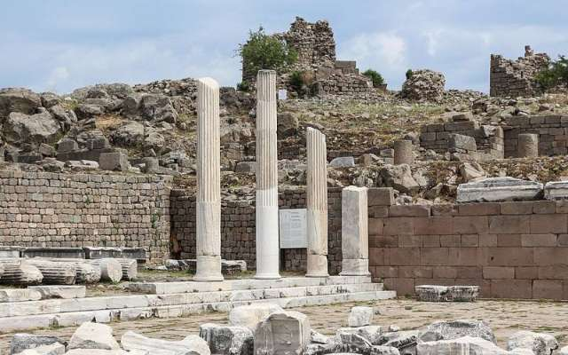
ベルガマのアクロポリスイズミル · 遺跡 ベルガマ・アスクレピオン遺跡イズミル · 遺跡
ベルガマ・アスクレピオン遺跡イズミル · 遺跡 ベルガマ・赤いバシリカイズミル · 遺跡
ベルガマ・赤いバシリカイズミル · 遺跡 デリンクユ地下都市ネヴシェヒル · 地下都市
デリンクユ地下都市ネヴシェヒル · 地下都市 エフェソスイズミル · 遺跡
エフェソスイズミル · 遺跡 エル・ナザル教会ネヴシェヒル · 宗教建築
エル・ナザル教会ネヴシェヒル · 宗教建築 ゴルディオン博物館アンカラ · 博物館
ゴルディオン博物館アンカラ · 博物館 ギョベクリテペシャンルウルファ · 遺跡
ギョベクリテペシャンルウルファ · 遺跡 ギョレメ遺跡ネヴシェヒル · 遺跡
ギョレメ遺跡ネヴシェヒル · 遺跡 ハットゥシャチョルム · 遺跡
ハットゥシャチョルム · 遺跡 ヒエラポリス（パムッカレ）遺跡デニズリ · 遺跡
ヒエラポリス（パムッカレ）遺跡デニズリ · 遺跡 暗闇の教会（ギョレメ）ネヴシェヒル · 宗教建築
暗闇の教会（ギョレメ）ネヴシェヒル · 宗教建築 カイマクル地下都市ネヴシェヒル · 地下都市
カイマクル地下都市ネヴシェヒル · 地下都市 ネムルト山アドゥヤマン · 遺跡
ネムルト山アドゥヤマン · 遺跡 トロイチャナッカレ · 遺跡
トロイチャナッカレ · 遺跡 クサントス遺跡アンタルヤ · 遺跡
クサントス遺跡アンタルヤ · 遺跡 ゼルヴェとパシャバー遺跡ネヴシェヒル · 遺跡
ゼルヴェとパシャバー遺跡ネヴシェヒル · 遺跡 チャタルヒュユク遺跡コンヤ · 遺跡
チャタルヒュユク遺跡コンヤ · 遺跡 チャヴシン遺跡（チャヴシン教会）ネヴシェヒル · 遺跡
チャヴシン遺跡（チャヴシン教会）ネヴシェヒル · 遺跡 7月15日民主主義博物館アンカラ · 博物館
7月15日民主主義博物館アンカラ · 博物館 アバント湖自然公園ボル · 湖
アバント湖自然公園ボル · 湖 アジェムホユックアクサライ · 遺跡
アジェムホユックアクサライ · 遺跡 アダダ古代都市ウスパルタ · 遺跡
アダダ古代都市ウスパルタ · 遺跡 諸島博物館イスタンブール · 博物館
諸島博物館イスタンブール · 博物館 アダム・ミツキェヴィチ博物館イスタンブール · 博物館
アダム・ミツキェヴィチ博物館イスタンブール · 博物館 アダムカヤラルメルスィン · 遺跡
アダムカヤラルメルスィン · 遺跡 アダナ・アタテュルクの家博物館アダナ · 博物館
アダナ・アタテュルクの家博物館アダナ · 博物館 アダナ博物館アダナ · 博物館アダテペ・オリーブオイル博物館チャナッカレ · 博物館
アダナ博物館アダナ · 博物館アダテペ・オリーブオイル博物館チャナッカレ · 博物館 アドゥヤマン博物館アドゥヤマン · 博物館
アドゥヤマン博物館アドゥヤマン · 博物館 アフヨン・メヴレヴィー修道場（スルタン・ディヴァーニ）アフヨンカラヒサール · 宗教建築
アフヨン・メヴレヴィー修道場（スルタン・ディヴァーニ）アフヨンカラヒサール · 宗教建築 アフヨンカラヒサール城アフヨンカラヒサール · 城・歴史的建造物
アフヨンカラヒサール城アフヨンカラヒサール · 城・歴史的建造物 アフヨンカラヒサール博物館アフヨンカラヒサール · 博物館
アフヨンカラヒサール博物館アフヨンカラヒサール · 博物館 アゴラ遺跡（イズミル）イズミル · 遺跡
アゴラ遺跡（イズミル）イズミル · 遺跡 アフラト博物館ビトリス · 博物館
アフラト博物館ビトリス · 博物館 アフラト・セルジューク墓地ビトリス · 遺跡
アフラト・セルジューク墓地ビトリス · 遺跡 アフメト・ピリシュティナ市アーカイブと博物館イズミル · 博物館
アフメト・ピリシュティナ市アーカイブと博物館イズミル · 博物館 アフリダ・シナゴーグイスタンブール · 宗教建築
アフリダ・シナゴーグイスタンブール · 宗教建築 木工芸博物館エスキシェヒル · 博物館アイガイ遺跡マニサ · 遺跡
木工芸博物館エスキシェヒル · 博物館アイガイ遺跡マニサ · 遺跡 アイザノイ遺跡キュタヒヤ · 遺跡アカリッソス古代都市アンタルヤ · 遺跡アクダマル記念博物館ヴァン · 博物館
アイザノイ遺跡キュタヒヤ · 遺跡アカリッソス古代都市アンタルヤ · 遺跡アクダマル記念博物館ヴァン · 博物館 アッカレ遺跡メルスィン · 遺跡アクサライ修道院渓谷遺跡アクサライ · 遺跡
アッカレ遺跡メルスィン · 遺跡アクサライ修道院渓谷遺跡アクサライ · 遺跡 アクサライ博物館アクサライ · 博物館
アクサライ博物館アクサライ · 博物館 アクチャコジャ（ジェノヴァ）城デュズジェ · 城・歴史的建造物
アクチャコジャ（ジェノヴァ）城デュズジェ · 城・歴史的建造物 アクシェヒル・ナスレッディン・ホジャ考古学民俗学博物館コンヤ · 博物館アクシェムセッティン廟ボル · 宗教建築
アクシェヒル・ナスレッディン・ホジャ考古学民俗学博物館コンヤ · 博物館アクシェムセッティン廟ボル · 宗教建築 アラバンダ遺跡アイドゥン · 遺跡
アラバンダ遺跡アイドゥン · 遺跡 アラジャホユック博物館と遺跡チョルム · 遺跡
アラジャホユック博物館と遺跡チョルム · 遺跡 アラエッディン・モスクコンヤ · 宗教建築アラエッディン・ヤヴァシチャの家博物館キリス · 博物館
アラエッディン・モスクコンヤ · 宗教建築アラエッディン・ヤヴァシチャの家博物館キリス · 博物館 アラガディ・タートルビーチギルネ（キレニア） · 自然景勝地
アラガディ・タートルビーチギルネ（キレニア） · 自然景勝地 アラギョズ司令部博物館アンカラ · 博物館
アラギョズ司令部博物館アンカラ · 博物館 アラハン修道院メルスィン · 宗教建築アランヤ・アタテュルクの家博物館アンタルヤ · 博物館
アラハン修道院メルスィン · 宗教建築アランヤ・アタテュルクの家博物館アンタルヤ · 博物館 アランヤ城アンタルヤ · 城・歴史的建造物
アランヤ城アンタルヤ · 城・歴史的建造物 アランヤ博物館アンタルヤ · 博物館
アランヤ博物館アンタルヤ · 博物館 アララハンアンタルヤ · 城・歴史的建造物
アララハンアンタルヤ · 城・歴史的建造物 アライ・ハンアクサライ · 城・歴史的建造物アラチャム住民交換博物館サムスン · 博物館
アライ・ハンアクサライ · 城・歴史的建造物アラチャム住民交換博物館サムスン · 博物館 アラシェヒル遺跡マニサ · 遺跡
アラシェヒル遺跡マニサ · 遺跡 アレクサンドリア・トロアス遺跡チャナッカレ · 遺跡アリ・デミルソイ自然史博物館エルズィンジャン · 博物館
アレクサンドリア・トロアス遺跡チャナッカレ · 遺跡アリ・デミルソイ自然史博物館エルズィンジャン · 博物館 アリンダ遺跡アイドゥン · 遺跡
アリンダ遺跡アイドゥン · 遺跡 アリシャル遺丘ヨズガト · 遺跡
アリシャル遺丘ヨズガト · 遺跡 アルトゥンキョイ野外博物館アンカラ · 博物館
アルトゥンキョイ野外博物館アンカラ · 博物館 アルトゥンテペ・ウラルトゥ城塞エルズィンジャン · 遺跡
アルトゥンテペ・ウラルトゥ城塞エルズィンジャン · 遺跡 アマスラ城バルトゥン · 城・歴史的建造物
アマスラ城バルトゥン · 城・歴史的建造物 アマスラ博物館バルトゥン · 博物館
アマスラ博物館バルトゥン · 博物館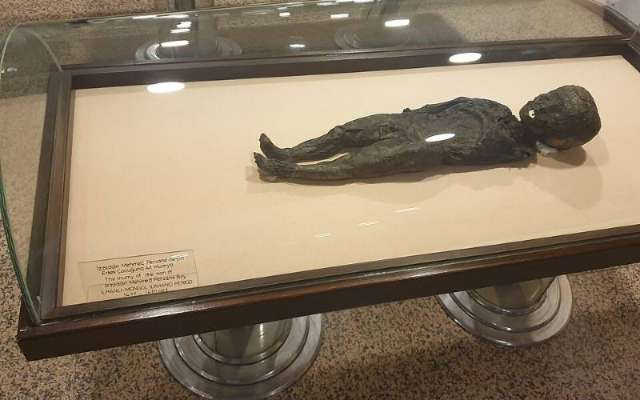
アマスヤ博物館アマスヤ · 博物館 アミンタスの岩窟墓ムーラ · 遺跡
アミンタスの岩窟墓ムーラ · 遺跡 アミソスの丘（アミソス古代都市）サムスン · 遺跡
アミソスの丘（アミソス古代都市）サムスン · 遺跡 アモリオン古代都市アフヨンカラヒサール · 遺跡
アモリオン古代都市アフヨンカラヒサール · 遺跡 アモス古代都市ムーラ · 遺跡アミュゾン古代都市アイドゥン · 遺跡
アモス古代都市ムーラ · 遺跡アミュゾン古代都市アイドゥン · 遺跡 アナドル・ヒサルイスタンブール · 城・歴史的建造物
アナドル・ヒサルイスタンブール · 城・歴史的建造物 アナトリア文明博物館アンカラ · 博物館
アナトリア文明博物館アンカラ · 博物館 アナトリア・リビングビレッジ野外博物館アンカラ · 博物館アナムル博物館メルスィン · 博物館
アナトリア・リビングビレッジ野外博物館アンカラ · 博物館アナムル博物館メルスィン · 博物館 アナザルボス遺跡（アナヴァルザ）アダナ · 遺跡
アナザルボス遺跡（アナヴァルザ）アダナ · 遺跡 アネムリウム遺跡メルスィン · 遺跡
アネムリウム遺跡メルスィン · 遺跡 アンカラ城アンカラ · 城・歴史的建造物
アンカラ城アンカラ · 城・歴史的建造物 アンカラおもちゃ博物館アンカラ · 博物館
アンカラおもちゃ博物館アンカラ · 博物館 アンカラ・ローマ劇場アンカラ · 遺跡
アンカラ・ローマ劇場アンカラ · 遺跡 アンタルヤ・アタテュルクの家博物館アンタルヤ · 博物館
アンタルヤ・アタテュルクの家博物館アンタルヤ · 博物館 アンタルヤ民俗学博物館アンタルヤ · 博物館
アンタルヤ民俗学博物館アンタルヤ · 博物館 アンタルヤ博物館アンタルヤ · 博物館アンタルヤ・ネクロポリス博物館アンタルヤ · 博物館
アンタルヤ博物館アンタルヤ · 博物館アンタルヤ・ネクロポリス博物館アンタルヤ · 博物館 アンタルヤおもちゃ博物館アンタルヤ · 博物館
アンタルヤおもちゃ博物館アンタルヤ · 博物館 アンタルヤ・シエドラ古代都市アンタルヤ · 遺跡
アンタルヤ・シエドラ古代都市アンタルヤ · 遺跡 アンタンドロス古代都市バルケシル · 遺跡
アンタンドロス古代都市バルケシル · 遺跡 ピシディアのアンティオキア遺跡ウスパルタ · 遺跡
ピシディアのアンティオキア遺跡ウスパルタ · 遺跡 アンティオキア・アド・クラグム古代都市アンタルヤ · 遺跡
アンティオキア・アド・クラグム古代都市アンタルヤ · 遺跡 アンティフェロス古代劇場（カシュ）アンタルヤ · 遺跡
アンティフェロス古代劇場（カシュ）アンタルヤ · 遺跡 アンティフォニティス教会ギルネ（キレニア） · 宗教建築
アンティフォニティス教会ギルネ（キレニア） · 宗教建築 アヌトカビルアンカラ · 博物館
アヌトカビルアンカラ · 博物館 アペルライ古代都市アンタルヤ · 遺跡
アペルライ古代都市アンタルヤ · 遺跡 アポロン・スミンテウス遺跡チャナッカレ · 遺跡
アポロン・スミンテウス遺跡チャナッカレ · 遺跡 アポロニア（リュキア）古代都市アンタルヤ · 遺跡
アポロニア（リュキア）古代都市アンタルヤ · 遺跡 使徒アンデレ修道院イスケレ（トリコモ） · 宗教建築
使徒アンデレ修道院イスケレ（トリコモ） · 宗教建築 アラ・ギュレル博物館イスタンブール · 博物館
アラ・ギュレル博物館イスタンブール · 博物館 アリアッソス古代都市アンタルヤ · 遺跡
アリアッソス古代都市アンタルヤ · 遺跡 アルカス・アートセンターイズミル · 博物館アルネアイ古代都市アンタルヤ · 遺跡
アルカス・アートセンターイズミル · 博物館アルネアイ古代都市アンタルヤ · 遺跡 アルサダ古代都市ムーラ · 遺跡
アルサダ古代都市ムーラ · 遺跡 アルサメイア遺跡アドゥヤマン · 遺跡
アルサメイア遺跡アドゥヤマン · 遺跡 アルテルイスタンブール · 博物館
アルテルイスタンブール · 博物館 アリカンダ遺跡アンタルヤ · 遺跡
アリカンダ遺跡アンタルヤ · 遺跡 アスハーブ・ケフフ複合施設カフラマンマラシュ · 宗教建築
アスハーブ・ケフフ複合施設カフラマンマラシュ · 宗教建築 軍事博物館イスタンブール · 博物館
軍事博物館イスタンブール · 博物館 アスペンドスアンタルヤ · 遺跡
アスペンドスアンタルヤ · 遺跡 アッソス遺跡チャナッカレ · 遺跡アタテュルクの家博物館（ディヤルバクル）ディヤルバクル · 博物館
アッソス遺跡チャナッカレ · 遺跡アタテュルクの家博物館（ディヤルバクル）ディヤルバクル · 博物館 アタテュルク邸と鉄道博物館アンカラ · 博物館
アタテュルク邸と鉄道博物館アンカラ · 博物館 アタテュルク博物館（シシュリ）イスタンブール · 博物館アタテュルクと民俗学博物館（ウシャク）ウシャク · 博物館
アタテュルク博物館（シシュリ）イスタンブール · 博物館アタテュルクと民俗学博物館（ウシャク）ウシャク · 博物館 アタテュルク・レディフ・民俗学博物館コジャエリ · 博物館
アタテュルク・レディフ・民俗学博物館コジャエリ · 博物館 アトラス1948イスタンブール映画博物館イスタンブール · 博物館
アトラス1948イスタンブール映画博物館イスタンブール · 博物館 アウグストゥス神殿アンカラ · 遺跡
アウグストゥス神殿アンカラ · 遺跡 狩猟館宮殿博物館コジャエリ · 博物館
狩猟館宮殿博物館コジャエリ · 博物館 アヤ・イリニ記念博物館イスタンブール · 宗教建築
アヤ・イリニ記念博物館イスタンブール · 宗教建築 アヤニス城ヴァン · 遺跡
アヤニス城ヴァン · 遺跡 アヤス（ユムルタルク）城アダナ · 城・歴史的建造物
アヤス（ユムルタルク）城アダナ · 城・歴史的建造物 アヤソフィア歴史体験博物館イスタンブール · 博物館
アヤソフィア歴史体験博物館イスタンブール · 博物館 アヤソフィア・ケビル・ジャーミーイスタンブール · 宗教建築
アヤソフィア・ケビル・ジャーミーイスタンブール · 宗教建築 アヤスルク・聖ヨハネ教会遺跡イズミル · 遺跡
アヤスルク・聖ヨハネ教会遺跡イズミル · 遺跡 アヤスルク城イズミル · 城・歴史的建造物
アヤスルク城イズミル · 城・歴史的建造物 アイドゥン考古学博物館アイドゥン · 博物館アギア・トリアス・バシリカイスケレ（トリコモ） · 宗教建築
アイドゥン考古学博物館アイドゥン · 博物館アギア・トリアス・バシリカイスケレ（トリコモ） · 宗教建築 アイナルカヴァク離宮イスタンブール · 城・歴史的建造物
アイナルカヴァク離宮イスタンブール · 城・歴史的建造物 聖ニコラオス記念博物館アンタルヤ · 博物館聖メルクリウス地下都市アクサライ · 地下都市聖パウロの道アンタルヤ · ハイキングコース
聖ニコラオス記念博物館アンタルヤ · 博物館聖メルクリウス地下都市アクサライ · 地下都市聖パウロの道アンタルヤ · ハイキングコース アッチャナ・ホユック（アララハ）ハタイ · 遺跡
アッチャナ・ホユック（アララハ）ハタイ · 遺跡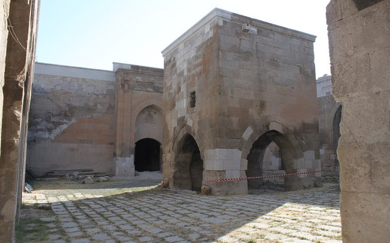
アーズカラ・ハンアクサライ · 城・歴史的建造物 アーシュク・ヴェイセル博物館スィヴァス · 博物館
アーシュク・ヴェイセル博物館スィヴァス · 博物館 アシュクル・ホユックアクサライ · 遺跡
アシュクル・ホユックアクサライ · 遺跡 バファ湖自然公園ムーラ · 湖バフラ博物館サムスン · 博物館
バファ湖自然公園ムーラ · 湖バフラ博物館サムスン · 博物館 バクラス城ハタイ · 城・歴史的建造物バルブラ古代都市ブルドゥル · 遺跡
バクラス城ハタイ · 城・歴史的建造物バルブラ古代都市ブルドゥル · 遺跡 バルケシル・クヴァイ・ミッリイェ博物館バルケシル · 博物館
バルケシル・クヴァイ・ミッリイェ博物館バルケシル · 博物館 バルクルギョルとハリールッラフマン・モスクシャンルウルファ · 宗教建築
バルクルギョルとハリールッラフマン・モスクシャンルウルファ · 宗教建築 バンドゥルマ博物館バルケシル · 博物館
バンドゥルマ博物館バルケシル · 博物館 バンドゥルマ号船舶博物館サムスン · 博物館
バンドゥルマ号船舶博物館サムスン · 博物館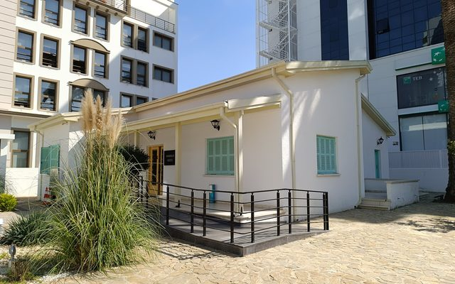
蛮行博物館レフコシャ（ニコシア） · 博物館 バルギュリア古代都市ムーラ · 遺跡
バルギュリア古代都市ムーラ · 遺跡 バトマン博物館バトマン · 博物館
バトマン博物館バトマン · 博物館 西部戦線司令部博物館コンヤ · 博物館
西部戦線司令部博物館コンヤ · 博物館 バイブルト・バクス博物館バイブルト · 博物館ベルディビ洞窟アンタルヤ · 遺跡
バイブルト・バクス博物館バイブルト · 博物館ベルディビ洞窟アンタルヤ · 遺跡 ベラパイス修道院ギルネ（キレニア） · 宗教建築
ベラパイス修道院ギルネ（キレニア） · 宗教建築 ベルガマ博物館イズミル · 博物館
ベルガマ博物館イズミル · 博物館 ベヤズット浴場文化博物館イスタンブール · 博物館
ベヤズット浴場文化博物館イスタンブール · 博物館 ベイジェスルタン遺丘デニズリ · 遺跡
ベイジェスルタン遺丘デニズリ · 遺跡 ベイコズ・ガラスとクリスタル博物館イスタンブール · 博物館
ベイコズ・ガラスとクリスタル博物館イスタンブール · 博物館 ベイレルベイ宮殿イスタンブール · 城・歴史的建造物
ベイレルベイ宮殿イスタンブール · 城・歴史的建造物 ベイパザル・リビングミュージアムアンカラ · 博物館
ベイパザル・リビングミュージアムアンカラ · 博物館 ベイシェヒル湖国立公園コンヤ · 湖ベシュコナクラル民俗学博物館とマラティヤの伝統家屋マラティヤ · 博物館
ベイシェヒル湖国立公園コンヤ · 湖ベシュコナクラル民俗学博物館とマラティヤの伝統家屋マラティヤ · 博物館 ベシュパルマク山脈ギルネ（キレニア） · 自然景勝地ビレジク博物館ビレジク · 博物館
ベシュパルマク山脈ギルネ（キレニア） · 自然景勝地ビレジク博物館ビレジク · 博物館 ビン・テペ・リディアの墳丘群マニサ · 遺跡
ビン・テペ・リディアの墳丘群マニサ · 遺跡 ビンビル・キリセカラマン · 遺跡
ビンビル・キリセカラマン · 遺跡 ビンビルディレク貯水池イスタンブール · 城・歴史的建造物ビンギョルの浮島ビンギョル · 湖
ビンビルディレク貯水池イスタンブール · 城・歴史的建造物ビンギョルの浮島ビンギョル · 湖 ビルギ・チャクルアー邸イズミル · 博物館ビトリス民俗学博物館ビトリス · 博物館
ビルギ・チャクルアー邸イズミル · 博物館ビトリス民俗学博物館ビトリス · 博物館 ビトリス城ビトリス · 城・歴史的建造物
ビトリス城ビトリス · 城・歴史的建造物 ブラウンドス遺跡ウシャク · 遺跡
ブラウンドス遺跡ウシャク · 遺跡 ボドルム古代劇場ムーラ · 遺跡ボドルム・セルチェ・リマヌ・ガラス沈没船展示室ムーラ · 博物館
ボドルム古代劇場ムーラ · 遺跡ボドルム・セルチェ・リマヌ・ガラス沈没船展示室ムーラ · 博物館 ボドルム水中考古学博物館ムーラ · 博物館
ボドルム水中考古学博物館ムーラ · 博物館 ボラマン城とハズィネダルオウル邸オルドゥ · 城・歴史的建造物
ボラマン城とハズィネダルオウル邸オルドゥ · 城・歴史的建造物 ボル博物館ボル · 博物館
ボル博物館ボル · 博物館 ボンジュクル・ホユックコンヤ · 遺跡
ボンジュクル・ホユックコンヤ · 遺跡 ボスタンル野外考古学博物館イズミル · 博物館
ボスタンル野外考古学博物館イズミル · 博物館 ボズドアン水道橋イスタンブール · 城・歴史的建造物ボアテペ・チーズ博物館カルス · 博物館
ボズドアン水道橋イスタンブール · 城・歴史的建造物ボアテペ・チーズ博物館カルス · 博物館 ボアズキョイ博物館チョルム · 博物館
ボアズキョイ博物館チョルム · 博物館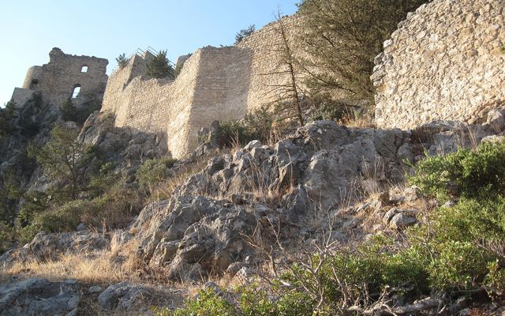
ブッファヴェント城ギルネ（キレニア） · 城・歴史的建造物 ブルガリア聖ステファン教会（鉄の教会）イスタンブール · 宗教建築
ブルガリア聖ステファン教会（鉄の教会）イスタンブール · 宗教建築 ブルドゥル博物館ブルドゥル · 博物館
ブルドゥル博物館ブルドゥル · 博物館 ブルサ考古学博物館ブルサ · 博物館
ブルサ考古学博物館ブルサ · 博物館 ブルサ・アタテュルクの家博物館ブルサ · 博物館
ブルサ・アタテュルクの家博物館ブルサ · 博物館 ブルサ市博物館ブルサ · 博物館
ブルサ市博物館ブルサ · 博物館 ブルサ・トルコ・イスラム美術博物館ブルサ · 博物館
ブルサ・トルコ・イスラム美術博物館ブルサ · 博物館 ブルサ・ウル・モスクブルサ · 宗教建築
ブルサ・ウル・モスクブルサ · 宗教建築 ブルサ・イェシル・モスクとイェシル廟ブルサ · 宗教建築ブルサ・イズニク湖のバシリカブルサ · 宗教建築
ブルサ・イェシル・モスクとイェシル廟ブルサ · 宗教建築ブルサ・イズニク湖のバシリカブルサ · 宗教建築 ビュユク・アー・メドレセアマスヤ · 宗教建築
ビュユク・アー・メドレセアマスヤ · 宗教建築 ビュユク・ハンレフコシャ（ニコシア） · 城・歴史的建造物
ビュユク・ハンレフコシャ（ニコシア） · 城・歴史的建造物 大宮殿モザイク博物館イスタンブール · 博物館
大宮殿モザイク博物館イスタンブール · 博物館 ジャジャベイ・メドレセクルシェヒル · 宗教建築
ジャジャベイ・メドレセクルシェヒル · 宗教建築 ジャーヒト・ストク・タランジュの家民俗学博物館ディヤルバクル · 博物館ジェヘンネマズ洞窟ゾングルダク · 自然景勝地
ジャーヒト・ストク・タランジュの家民俗学博物館ディヤルバクル · 博物館ジェヘンネマズ洞窟ゾングルダク · 自然景勝地 ジェンデレ橋アドゥヤマン · 城・歴史的建造物
ジェンデレ橋アドゥヤマン · 城・歴史的建造物 ジェンデレ美術館イスタンブール · 博物館
ジェンデレ美術館イスタンブール · 博物館 ジェルモダンアンカラ · 博物館
ジェルモダンアンカラ · 博物館 ジンジ・ハンカラビュク · 城・歴史的建造物ジズレの赤いメドレセシュルナク · 城・歴史的建造物
ジンジ・ハンカラビュク · 城・歴史的建造物ジズレの赤いメドレセシュルナク · 城・歴史的建造物 ジュマルクズク村ブルサ · 城・歴史的建造物
ジュマルクズク村ブルサ · 城・歴史的建造物 共和国博物館アンカラ · 博物館
共和国博物館アンカラ · 博物館 ダラマン川ムーラ · ラフティング
ダラマン川ムーラ · ラフティング ダラ遺跡マルディン · 遺跡
ダラ遺跡マルディン · 遺跡 ダスキュレイオン古代都市バルケシル · 遺跡ダヴラズ・スキー場ウスパルタ · スキー場デミルキョイ鋳造所クルクラーレリ · 遺跡
ダスキュレイオン古代都市バルケシル · 遺跡ダヴラズ・スキー場ウスパルタ · スキー場デミルキョイ鋳造所クルクラーレリ · 遺跡 デニズリ・アタテュルクと民俗学博物館デニズリ · 博物館
デニズリ・アタテュルクと民俗学博物館デニズリ · 博物館 デニズリ市博物館デニズリ · 博物館
デニズリ市博物館デニズリ · 博物館 デニズリ・トリポリス遺跡デニズリ · 遺跡デルベ遺丘カラマン · 遺跡
デニズリ・トリポリス遺跡デニズリ · 遺跡デルベ遺丘カラマン · 遺跡 デルヴィシュ・パシャ邸レフコシャ（ニコシア） · 博物館
デルヴィシュ・パシャ邸レフコシャ（ニコシア） · 博物館 国家墓地アンカラ · 城・歴史的建造物
国家墓地アンカラ · 城・歴史的建造物 デヴリム自動車博物館エスキシェヒル · 博物館
デヴリム自動車博物館エスキシェヒル · 博物館 デイルルザファラン修道院マルディン · 宗教建築
デイルルザファラン修道院マルディン · 宗教建築 ティグリス・トンネル（ビルクレイン洞窟）ディヤルバクル · 遺跡
ティグリス・トンネル（ビルクレイン洞窟）ディヤルバクル · 遺跡 ディディム・アポロン神殿アイドゥン · 遺跡
ディディム・アポロン神殿アイドゥン · 遺跡 ディヴリーの大モスクと病院スィヴァス · 宗教建築
ディヴリーの大モスクと病院スィヴァス · 宗教建築 ディヤルバクル考古学博物館ディヤルバクル · 博物館
ディヤルバクル考古学博物館ディヤルバクル · 博物館 ディヤルバクル城壁ディヤルバクル · 城・歴史的建造物
ディヤルバクル城壁ディヤルバクル · 城・歴史的建造物 ディヤルバクル・ウル・モスクディヤルバクル · 宗教建築
ディヤルバクル・ウル・モスクディヤルバクル · 宗教建築 ドルマバフチェ宮殿イスタンブール · 城・歴史的建造物自然史博物館ブルドゥル · 博物館
ドルマバフチェ宮殿イスタンブール · 城・歴史的建造物自然史博物館ブルドゥル · 博物館 ドゥプニサ洞窟クルクラーレリ · 自然景勝地
ドゥプニサ洞窟クルクラーレリ · 自然景勝地 デュデンの滝アンタルヤ · 滝デュリュク（ドリケ）古代都市ガズィアンテプ · 遺跡
デュデンの滝アンタルヤ · 滝デュリュク（ドリケ）古代都市ガズィアンテプ · 遺跡 エディルネ大シナゴーグエディルネ · 宗教建築エディルネ・ヒドゥルルク砲台バルカン歴史博物館エディルネ · 博物館
エディルネ大シナゴーグエディルネ · 宗教建築エディルネ・ヒドゥルルク砲台バルカン歴史博物館エディルネ · 博物館 エディルネ・マケドニア塔エディルネ · 城・歴史的建造物
エディルネ・マケドニア塔エディルネ · 城・歴史的建造物 エディルネ博物館エディルネ · 博物館
エディルネ博物館エディルネ · 博物館 エディルネ宮殿（サライ・ジェディド）の遺構エディルネ · 遺跡
エディルネ宮殿（サライ・ジェディド）の遺構エディルネ · 遺跡 エディルネ・セリミエ・モスクエディルネ · 宗教建築エフェソス体験博物館イズミル · 博物館
エディルネ・セリミエ・モスクエディルネ · 宗教建築エフェソス体験博物館イズミル · 博物館 エフェソス博物館イズミル · 博物館
エフェソス博物館イズミル · 博物館 エフェソス遺跡・テラスハウスイズミル · 遺跡
エフェソス遺跡・テラスハウスイズミル · 遺跡 エフラトゥンプナル・ヒッタイトの泉の記念碑コンヤ · 遺跡エーゲ大学自然史博物館イズミル · 博物館
エフラトゥンプナル・ヒッタイトの泉の記念碑コンヤ · 遺跡エーゲ大学自然史博物館イズミル · 博物館 エライウッサ・セバステ古代都市メルスィン · 遺跡エラズー博物館エラズー · 博物館エルビスタン市博物館カフラマンマラシュ · 博物館
エライウッサ・セバステ古代都市メルスィン · 遺跡エラズー博物館エラズー · 博物館エルビスタン市博物館カフラマンマラシュ · 博物館 エルギズ現代美術館イスタンブール · 博物館エルマル博物館アンタルヤ · 博物館エミネ・ギョーユシュ料理博物館ガズィアンテプ · 博物館
エルギズ現代美術館イスタンブール · 博物館エルマル博物館アンタルヤ · 博物館エミネ・ギョーユシュ料理博物館ガズィアンテプ · 博物館 エミール・スルタン・モスクブルサ · 宗教建築エネズ城（アイノス）エディルネ · 城・歴史的建造物
エミール・スルタン・モスクブルサ · 宗教建築エネズ城（アイノス）エディルネ · 城・歴史的建造物 エンコミ（アラシヤ）遺跡ガズィマウサ（ファマグスタ） · 遺跡
エンコミ（アラシヤ）遺跡ガズィマウサ（ファマグスタ） · 遺跡 エルジエス・スキー場カイセリ · スキー場エレーリ博物館コンヤ · 博物館
エルジエス・スキー場カイセリ · スキー場エレーリ博物館コンヤ · 博物館 エルフェレク・タトルジャの滝スィノプ · 滝
エルフェレク・タトルジャの滝スィノプ · 滝 エリムタン考古学芸術博物館アンカラ · 博物館エルメネク・アフメト・ケレシュオウル考古学民俗学博物館カラマン · 博物館
エリムタン考古学芸術博物館アンカラ · 博物館エルメネク・アフメト・ケレシュオウル考古学民俗学博物館カラマン · 博物館 エリュトライ古代都市イズミル · 遺跡
エリュトライ古代都市イズミル · 遺跡 エルズィンジャン博物館エルズィンジャン · 博物館
エルズィンジャン博物館エルズィンジャン · 博物館 エルズルム・アタテュルクの家博物館エルズルム · 博物館
エルズルム・アタテュルクの家博物館エルズルム · 博物館 エルズルム城エルズルム · 城・歴史的建造物
エルズルム城エルズルム · 城・歴史的建造物 エルズルム博物館エルズルム · 博物館エルズルム国立絵画彫刻博物館エルズルム · 博物館
エルズルム博物館エルズルム · 博物館エルズルム国立絵画彫刻博物館エルズルム · 博物館 古スミルナ（バイラクル遺丘）イズミル · 遺跡
古スミルナ（バイラクル遺丘）イズミル · 遺跡 エスキシェヒル解放博物館エスキシェヒル · 博物館エテンナ古代都市アンタルヤ · 遺跡
エスキシェヒル解放博物館エスキシェヒル · 博物館エテンナ古代都市アンタルヤ · 遺跡 エティ考古学博物館エスキシェヒル · 博物館
エティ考古学博物館エスキシェヒル · 博物館 民俗学博物館アンカラ · 博物館
民俗学博物館アンカラ · 博物館 エヴリヤ・チェレビの道キュタヒヤ · ハイキングコース
エヴリヤ・チェレビの道キュタヒヤ · ハイキングコース エユップ・スルタン・モスクイスタンブール · 宗教建築
エユップ・スルタン・モスクイスタンブール · 宗教建築 エーイル城と預言者の墓廟ディヤルバクル · 城・歴史的建造物
エーイル城と預言者の墓廟ディヤルバクル · 城・歴史的建造物 エイルディル湖ウスパルタ · 湖
エイルディル湖ウスパルタ · 湖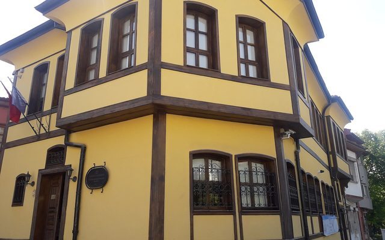
教育風刺漫画博物館エスキシェヒル · 博物館 ファスッラル記念碑コンヤ · 遺跡フェネル総主教庁と聖ゲオルギオス教会イスタンブール · 宗教建築
ファスッラル記念碑コンヤ · 遺跡フェネル総主教庁と聖ゲオルギオス教会イスタンブール · 宗教建築 フェネルバフチェ博物館イスタンブール · 博物館
フェネルバフチェ博物館イスタンブール · 博物館 フェティエ・ゲミレル島ムーラ · 遺跡
フェティエ・ゲミレル島ムーラ · 遺跡 フェティエ・カヤキョイ遺跡ムーラ · 遺跡
フェティエ・カヤキョイ遺跡ムーラ · 遺跡 フェティエ・レトーン遺跡ムーラ · 遺跡
フェティエ・レトーン遺跡ムーラ · 遺跡 フェティエ博物館イスタンブール · 博物館フェティエ博物館ムーラ · 博物館
フェティエ博物館イスタンブール · 博物館フェティエ博物館ムーラ · 博物館 フェティエ・ピナラ遺跡ムーラ · 遺跡
フェティエ・ピナラ遺跡ムーラ · 遺跡 フェティエ・トロス遺跡ムーラ · 遺跡フィルダム貯水池イスタンブール · 城・歴史的建造物フィリョス（ティオス）遺跡ゾングルダク · 遺跡
フェティエ・トロス遺跡ムーラ · 遺跡フィルダム貯水池イスタンブール · 城・歴史的建造物フィリョス（ティオス）遺跡ゾングルダク · 遺跡 フロリヤ・アタテュルク海の館イスタンブール · 博物館
フロリヤ・アタテュルク海の館イスタンブール · 博物館 フリギアの道エスキシェヒル · ハイキングコース
フリギアの道エスキシェヒル · ハイキングコース フルトゥナ川リゼ · ラフティングガガイ古代都市アンタルヤ · 遺跡
フルトゥナ川リゼ · ラフティングガガイ古代都市アンタルヤ · 遺跡 ガラタ・メヴレヴィー修道場博物館イスタンブール · 博物館
ガラタ・メヴレヴィー修道場博物館イスタンブール · 博物館 ガーズィー・キョシュキュディヤルバクル · 城・歴史的建造物
ガーズィー・キョシュキュディヤルバクル · 城・歴史的建造物 ガーズィー博物館サムスン · 博物館
ガーズィー博物館サムスン · 博物館 ガズィアンテプ考古学博物館ガズィアンテプ · 博物館
ガズィアンテプ考古学博物館ガズィアンテプ · 博物館 ガズィアンテプ城ガズィアンテプ · 城・歴史的建造物
ガズィアンテプ城ガズィアンテプ · 城・歴史的建造物 ガズィアンテプ防衛と英雄パノラマ博物館ガズィアンテプ · 博物館
ガズィアンテプ防衛と英雄パノラマ博物館ガズィアンテプ · 博物館 ゲリボル戦争博物館チャナッカレ · 博物館
ゲリボル戦争博物館チャナッカレ · 博物館 ゲリボル歴史地区（チャナッカレの戦い）チャナッカレ · 遺跡
ゲリボル歴史地区（チャナッカレの戦い）チャナッカレ · 遺跡 ゲルガ古代都市アイドゥン · 遺跡ゲルマニキア・モザイク遺跡カフラマンマラシュ · 遺跡
ゲルガ古代都市アイドゥン · 遺跡ゲルマニキア・モザイク遺跡カフラマンマラシュ · 遺跡 ギレスン城ギレスン · 城・歴史的建造物ギレスン博物館ギレスン · 博物館
ギレスン城ギレスン · 城・歴史的建造物ギレスン博物館ギレスン · 博物館 ギルレヴィクの滝エルズィンジャン · 滝
ギルレヴィクの滝エルズィンジャン · 滝 キレニア山岳トレイルギルネ（キレニア） · ハイキングコース
キレニア山岳トレイルギルネ（キレニア） · ハイキングコース キレニア城と沈没船博物館ギルネ（キレニア） · 城・歴史的建造物
キレニア城と沈没船博物館ギルネ（キレニア） · 城・歴史的建造物 キレニア・イコン博物館ギルネ（キレニア） · 博物館
キレニア・イコン博物館ギルネ（キレニア） · 博物館 ギョクカレ遺跡メルスィン · 遺跡
ギョクカレ遺跡メルスィン · 遺跡 ギョクヤイ財団チェス博物館アンカラ · 博物館
ギョクヤイ財団チェス博物館アンカラ · 博物館 ギョルジュク火口湖自然公園ウスパルタ · 湖
ギョルジュク火口湖自然公園ウスパルタ · 湖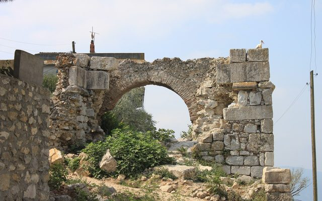
ギョルヤズ（リンダコス河畔のアポロニア）ブルサ · 遺跡 ギョイニュク渓谷アンタルヤ · 渓谷
ギョイニュク渓谷アンタルヤ · 渓谷 ギョズネ城メルスィン · 城・歴史的建造物
ギョズネ城メルスィン · 城・歴史的建造物 ギュルシェヒル・聖ヨハネ教会ネヴシェヒル · 宗教建築ギュミュシュハーネ博物館ギュミュシュハーネ · 博物館
ギュルシェヒル・聖ヨハネ教会ネヴシェヒル · 宗教建築ギュミュシュハーネ博物館ギュミュシュハーネ · 博物館 ギュミュシュケセン記念墓ムーラ · 遺跡
ギュミュシュケセン記念墓ムーラ · 遺跡 ギュミュシュレル修道院と地下都市ニーデ · 地下都市
ギュミュシュレル修道院と地下都市ニーデ · 地下都市 ギュプギュポウル邸民俗学博物館カイセリ · 博物館
ギュプギュポウル邸民俗学博物館カイセリ · 博物館 ギュゼルユルト考古学自然史博物館ギュゼルユルト（モルフ） · 博物館
ギュゼルユルト考古学自然史博物館ギュゼルユルト（モルフ） · 博物館 ギュゼルユルト修道院渓谷アクサライ · 宗教建築
ギュゼルユルト修道院渓谷アクサライ · 宗教建築 クトゥツ（グドゥツ）修道院ヴァン · 宗教建築
クトゥツ（グドゥツ）修道院ヴァン · 宗教建築 ハビービ・ネッジャール・モスクハタイ · 宗教建築
ハビービ・ネッジャール・モスクハタイ · 宗教建築 ハジュ・バイラム・ヴェリ・モスクアンカラ · 宗教建築
ハジュ・バイラム・ヴェリ・モスクアンカラ · 宗教建築 ハジュベクタシュ博物館ネヴシェヒル · 博物館
ハジュベクタシュ博物館ネヴシェヒル · 博物館 ハジュラル・ホユックブルドゥル · 遺跡
ハジュラル・ホユックブルドゥル · 遺跡 ハドリアヌス門アンタルヤ · 城・歴史的建造物ハドリアノポリス遺跡カラビュク · 遺跡
ハドリアヌス門アンタルヤ · 城・歴史的建造物ハドリアノポリス遺跡カラビュク · 遺跡 ハフザ7月15日博物館イスタンブール · 博物館ハッキャリのメイダン・メドレセハッキャリ · 城・歴史的建造物
ハフザ7月15日博物館イスタンブール · 博物館ハッキャリのメイダン・メドレセハッキャリ · 城・歴史的建造物 ハレプリバフチェ・モザイク博物館シャンルウルファ · 博物館ハミディエ砲台とチャナッカレ戦争歴史博物館チャナッカレ · 博物館
ハレプリバフチェ・モザイク博物館シャンルウルファ · 博物館ハミディエ砲台とチャナッカレ戦争歴史博物館チャナッカレ · 博物館 ハン・エル・バルール隊商宿シャンルウルファ · 城・歴史的建造物ハルビエの滝ハタイ · 滝
ハン・エル・バルール隊商宿シャンルウルファ · 城・歴史的建造物ハルビエの滝ハタイ · 滝 ハルプト城エラズー · 城・歴史的建造物
ハルプト城エラズー · 城・歴史的建造物 ハッラン遺跡シャンルウルファ · 遺跡
ハッラン遺跡シャンルウルファ · 遺跡 ハルシェナ城アマスヤ · 城・歴史的建造物
ハルシェナ城アマスヤ · 城・歴史的建造物 ハサン・パシャ・ハンディヤルバクル · 城・歴史的建造物ハサン・スュゼル民俗学博物館ガズィアンテプ · 博物館
ハサン・パシャ・ハンディヤルバクル · 城・歴史的建造物ハサン・スュゼル民俗学博物館ガズィアンテプ · 博物館 ハサンケイフ博物館と遺跡バトマン · 遺跡
ハサンケイフ博物館と遺跡バトマン · 遺跡 ハタイ考古学博物館ハタイ · 博物館ハタイ・ネジミ・アスフロウル考古学博物館ハタイ · 博物館
ハタイ考古学博物館ハタイ · 博物館ハタイ・ネジミ・アスフロウル考古学博物館ハタイ · 博物館 空軍博物館アンカラ · 博物館
空軍博物館アンカラ · 博物館 聖使徒教会（キュンベト・モスク）カルス · 宗教建築ハヴザ・アタテュルクの家博物館サムスン · 博物館
聖使徒教会（キュンベト・モスク）カルス · 宗教建築ハヴザ・アタテュルクの家博物館サムスン · 博物館 ハザル湖エラズー · 湖
ハザル湖エラズー · 湖 ハゼランラル邸アマスヤ · 博物館
ハゼランラル邸アマスヤ · 博物館 ヘレス記念碑（セッデュルバヒル）チャナッカレ · 遺跡
ヘレス記念碑（セッデュルバヒル）チャナッカレ · 遺跡 ヘラクレイア（ラトモス）古代都市ムーラ · 遺跡
ヘラクレイア（ラトモス）古代都市ムーラ · 遺跡 ヘラクレイア・サルバケ古代都市デニズリ · 遺跡
ヘラクレイア・サルバケ古代都市デニズリ · 遺跡 ヒエラポリス（パムッカレ）考古学博物館デニズリ · 博物館ヒルミ・ナキポウル・カメラ博物館イスタンブール · 博物館ヒサルト生きた歴史とジオラマ博物館イスタンブール · 博物館
ヒエラポリス（パムッカレ）考古学博物館デニズリ · 博物館ヒルミ・ナキポウル・カメラ博物館イスタンブール · 博物館ヒサルト生きた歴史とジオラマ博物館イスタンブール · 博物館 ヒッタイトの道チョルム · ハイキングコース
ヒッタイトの道チョルム · ハイキングコース ホルマ渓谷カスタモヌ · 渓谷
ホルマ渓谷カスタモヌ · 渓谷 ホシャプ城ヴァン · 城・歴史的建造物ヒュッラリマ古代都市ムーラ · 遺跡
ホシャプ城ヴァン · 城・歴史的建造物ヒュッラリマ古代都市ムーラ · 遺跡 イアソス遺跡ムーラ · 遺跡
イアソス遺跡ムーラ · 遺跡 イデベッソス古代都市アンタルヤ · 遺跡
イデベッソス古代都市アンタルヤ · 遺跡 ウフラムル離宮イスタンブール · 城・歴史的建造物
ウフラムル離宮イスタンブール · 城・歴史的建造物 ウフララ渓谷遺跡アクサライ · 遺跡
ウフララ渓谷遺跡アクサライ · 遺跡 ウルガズ・スキー場カスタモヌ · スキー場
ウルガズ・スキー場カスタモヌ · スキー場 イオタペ古代都市アンタルヤ · 遺跡
イオタペ古代都市アンタルヤ · 遺跡 ウルガンドゥ橋ブルサ · 城・歴史的建造物イシンダ古代都市アンタルヤ · 遺跡
ウルガンドゥ橋ブルサ · 城・歴史的建造物イシンダ古代都市アンタルヤ · 遺跡 ウスパルタ博物館ウスパルタ · 博物館
ウスパルタ博物館ウスパルタ · 博物館 ウードゥル虐殺記念碑と博物館ウードゥル · 博物館ジャンダルマ（憲兵）博物館アンカラ · 博物館
ウードゥル虐殺記念碑と博物館ウードゥル · 博物館ジャンダルマ（憲兵）博物館アンカラ · 博物館 ユリオポリスのネクロポリスアンカラ · 遺跡
ユリオポリスのネクロポリスアンカラ · 遺跡 ユスティニアヌス橋（ベシュキョプリュ）サカリヤ · 城・歴史的建造物
ユスティニアヌス橋（ベシュキョプリュ）サカリヤ · 城・歴史的建造物 カバテペ紹介センターチャナッカレ · 博物館カディフェカレイズミル · 城・歴史的建造物
カバテペ紹介センターチャナッカレ · 博物館カディフェカレイズミル · 城・歴史的建造物 カディアンダ古代都市ムーラ · 遺跡カドゥ城遺跡アイドゥン · 遺跡カフラマンカザン7月15日殉教者と民主主義博物館アンカラ · 博物館
カディアンダ古代都市ムーラ · 遺跡カドゥ城遺跡アイドゥン · 遺跡カフラマンカザン7月15日殉教者と民主主義博物館アンカラ · 博物館 カフラマンマラシュ博物館カフラマンマラシュ · 博物館
カフラマンマラシュ博物館カフラマンマラシュ · 博物館 キャフタ・イェニ城遺跡アドゥヤマン · 遺跡
キャフタ・イェニ城遺跡アドゥヤマン · 遺跡 カマン・カレホユック考古学博物館クルシェヒル · 遺跡カンディッリ地震博物館イスタンブール · 博物館カンデュバ古代都市アンタルヤ · 遺跡
カマン・カレホユック考古学博物館クルシェヒル · 遺跡カンディッリ地震博物館イスタンブール · 博物館カンデュバ古代都市アンタルヤ · 遺跡 カンルディヴァーネ遺跡メルスィン · 遺跡
カンルディヴァーネ遺跡メルスィン · 遺跡 カンルディヴァーネ（カニュテリス）メルスィン · 遺跡
カンルディヴァーネ（カニュテリス）メルスィン · 遺跡 カンタラ城イスケレ（トリコモ） · 城・歴史的建造物
カンタラ城イスケレ（トリコモ） · 城・歴史的建造物 カプズバシュの滝カイセリ · 滝
カプズバシュの滝カイセリ · 滝 カプルカヤ岩窟墓チョルム · 遺跡
カプルカヤ岩窟墓チョルム · 遺跡 カラベルの岩壁レリーフイズミル · 遺跡カラビュク・サフランボル博物館カラビュク · 博物館
カラベルの岩壁レリーフイズミル · 遺跡カラビュク・サフランボル博物館カラビュク · 博物館 カラジャス民俗学博物館アイドゥン · 博物館
カラジャス民俗学博物館アイドゥン · 博物館 カラデニズ・エレーリ博物館ゾングルダク · 博物館
カラデニズ・エレーリ博物館ゾングルダク · 博物館 カラギョル（ボルチカ）アルトヴィン · 湖
カラギョル（ボルチカ）アルトヴィン · 湖 カラハンテペ遺跡シャンルウルファ · 遺跡
カラハンテペ遺跡シャンルウルファ · 遺跡 カライン洞窟アンタルヤ · 自然景勝地
カライン洞窟アンタルヤ · 自然景勝地 カラカバクル古代集落メルスィン · 遺跡
カラカバクル古代集落メルスィン · 遺跡 カラクシュ墳丘アドゥヤマン · 遺跡
カラクシュ墳丘アドゥヤマン · 遺跡 カラマン博物館カラマン · 博物館
カラマン博物館カラマン · 博物館 カランルク渓谷エルズィンジャン · 渓谷
カランルク渓谷エルズィンジャン · 渓谷 カラタイ（タイル）博物館コンヤ · 博物館
カラタイ（タイル）博物館コンヤ · 博物館 カラテペ・アスランタシュ博物館と遺跡オスマニエ · 遺跡
カラテペ・アスランタシュ博物館と遺跡オスマニエ · 遺跡 カリアの道ムーラ · ハイキングコース
カリアの道ムーラ · ハイキングコース カーリエ・モスク（コーラ）イスタンブール · 宗教建築
カーリエ・モスク（コーラ）イスタンブール · 宗教建築 カルケミシュ古代都市ガズィアンテプ · 遺跡
カルケミシュ古代都市ガズィアンテプ · 遺跡 カルパス国立公園とゴールデンビーチイスケレ（トリコモ） · 自然景勝地
カルパス国立公園とゴールデンビーチイスケレ（トリコモ） · 自然景勝地 カルス・コーカサス戦線戦史博物館カルス · 博物館
カルス・コーカサス戦線戦史博物館カルス · 博物館 カルス城カルス · 城・歴史的建造物
カルス城カルス · 城・歴史的建造物 カルス博物館カルス · 博物館カルタルカヤ・スキー場ボル · スキー場
カルス博物館カルス · 博物館カルタルカヤ・スキー場ボル · スキー場 カルテペ・スキー場コジャエリ · スキー場
カルテペ・スキー場コジャエリ · スキー場 カスタバラ遺跡オスマニエ · 遺跡カスタモヌ博物館カスタモヌ · 博物館
カスタバラ遺跡オスマニエ · 遺跡カスタモヌ博物館カスタモヌ · 博物館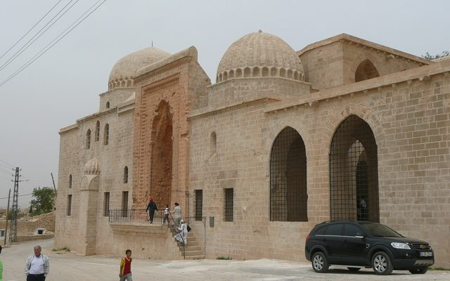
カスミエ・メドレセマルディン · 宗教建築 カウノス遺跡ムーラ · 遺跡
カウノス遺跡ムーラ · 遺跡 カイセリ考古学博物館カイセリ · 博物館
カイセリ考古学博物館カイセリ · 博物館 カイセリ・アタテュルクの家博物館カイセリ · 博物館
カイセリ・アタテュルクの家博物館カイセリ · 博物館 カイセリ城カイセリ · 城・歴史的建造物
カイセリ城カイセリ · 城・歴史的建造物 カチカル山脈リゼ · ハイキングコース
カチカル山脈リゼ · ハイキングコース ケコヴァの沈んだ都市アンタルヤ · 遺跡
ケコヴァの沈んだ都市アンタルヤ · 遺跡 ケレンデリス古代都市メルスィン · 遺跡
ケレンデリス古代都市メルスィン · 遺跡 ケマル・スナル博物館イスタンブール · 博物館ケマリエ（エイン）歴史都市エルズィンジャン · 城・歴史的建造物
ケマル・スナル博物館イスタンブール · 博物館ケマリエ（エイン）歴史都市エルズィンジャン · 城・歴史的建造物 ケメル橋（セイディケメル）ムーラ · 城・歴史的建造物
ケメル橋（セイディケメル）ムーラ · 城・歴史的建造物 ケラモス古代都市ムーラ · 遺跡
ケラモス古代都市ムーラ · 遺跡 ケルケネス古代都市ヨズガト · 遺跡
ケルケネス古代都市ヨズガト · 遺跡 ケスキン・スル洞窟地下都市クルッカレ · 地下都市
ケスキン・スル洞窟地下都市クルッカレ · 地下都市 キー・ミュージアム（クラシックカー博物館）イズミル · 博物館
キー・ミュージアム（クラシックカー博物館）イズミル · 博物館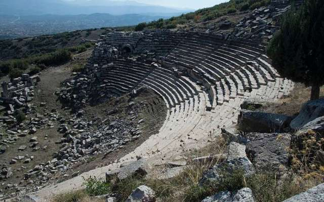
キビラ遺跡ブルドゥル · 遺跡キリス博物館キリス · 博物館 キリストラ古代都市コンヤ · 遺跡
キリストラ古代都市コンヤ · 遺跡 キリトバヒル城博物館チャナッカレ · 博物館
キリトバヒル城博物館チャナッカレ · 博物館 キリトバヒル城チャナッカレ · 城・歴史的建造物キタナウラ古代都市アンタルヤ · 遺跡
キリトバヒル城チャナッカレ · 城・歴史的建造物キタナウラ古代都市アンタルヤ · 遺跡 クラロス遺跡イズミル · 遺跡クラゾメナイ遺跡イズミル · 遺跡コジャエリ考古学博物館コジャエリ · 博物館
クラロス遺跡イズミル · 遺跡クラゾメナイ遺跡イズミル · 遺跡コジャエリ考古学博物館コジャエリ · 博物館 コロフォン古代都市イズミル · 遺跡コマナ・ポンティカ古代都市トカト · 遺跡
コロフォン古代都市イズミル · 遺跡コマナ・ポンティカ古代都市トカト · 遺跡 コヌラルプ博物館デュズジェ · 博物館
コヌラルプ博物館デュズジェ · 博物館 コンヤ考古学博物館コンヤ · 博物館
コンヤ考古学博物館コンヤ · 博物館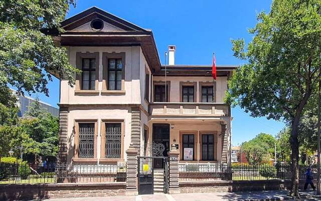
コンヤ・アタテュルクの家博物館コンヤ · 博物館コンヤ民俗学博物館コンヤ · 博物館 コンヤ・パノラマ博物館コンヤ · 博物館コリュダッラ古代都市アンタルヤ · 遺跡
コンヤ・パノラマ博物館コンヤ · 博物館コリュダッラ古代都市アンタルヤ · 遺跡 コリュコスとクズカレスィメルスィン · 城・歴史的建造物
コリュコスとクズカレスィメルスィン · 城・歴史的建造物 コシュート・ハウス博物館キュタヒヤ · 博物館
コシュート・ハウス博物館キュタヒヤ · 博物館 コシュートの家博物館キュタヒヤ · 博物館
コシュートの家博物館キュタヒヤ · 博物館 コザ・ハンブルサ · 城・歴史的建造物王家の墓博物館と遺跡ガズィマウサ（ファマグスタ） · 遺跡
コザ・ハンブルサ · 城・歴史的建造物王家の墓博物館と遺跡ガズィマウサ（ファマグスタ） · 遺跡 クレムナ古代都市ブルドゥル · 遺跡
クレムナ古代都市ブルドゥル · 遺跡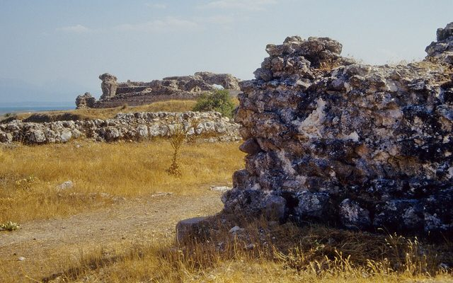
クバダバード宮殿コンヤ · 遺跡独立戦争博物館アンカラ · 博物館 クルキョプリュ記念博物館とアダナの伝統家屋アダナ · 博物館
クルキョプリュ記念博物館とアダナの伝統家屋アダナ · 博物館 クルシュンルの滝自然公園アンタルヤ · 滝
クルシュンルの滝自然公園アンタルヤ · 滝 クヴァイ・ミッリイェ博物館バルケシル · 博物館
クヴァイ・ミッリイェ博物館バルケシル · 博物館 キュアネアイ古代都市アンタルヤ · 遺跡
キュアネアイ古代都市アンタルヤ · 遺跡 キュメ古代都市イズミル · 遺跡
キュメ古代都市イズミル · 遺跡 キュジコス古代都市バルケシル · 遺跡
キュジコス古代都市バルケシル · 遺跡 キャーズム・カラベキル・パシャ博物館イスタンブール · 博物館
キャーズム・カラベキル・パシャ博物館イスタンブール · 博物館 キョプリュリュ渓谷国立公園アンタルヤ · 渓谷
キョプリュリュ渓谷国立公園アンタルヤ · 渓谷 キョプリュパザル（アスペンドス）橋アンタルヤ · 城・歴史的建造物
キョプリュパザル（アスペンドス）橋アンタルヤ · 城・歴史的建造物 キョイジェイズ湖ムーラ · 湖
キョイジェイズ湖ムーラ · 湖 キュルテペ遺跡カイセリ · 遺跡
キュルテペ遺跡カイセリ · 遺跡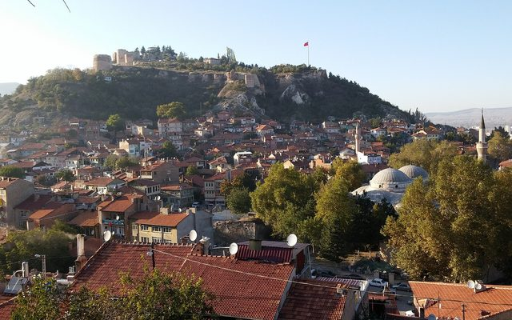
キュタヒヤ城キュタヒヤ · 城・歴史的建造物キュタヒヤ博物館キュタヒヤ · 博物館小アイヴァスル（聖アンナ）教会トラブゾン · 宗教建築 キュチュクス離宮イスタンブール · 城・歴史的建造物クルクラーレリ博物館クルクラーレリ · 博物館クルシェヒル博物館クルシェヒル · 博物館
キュチュクス離宮イスタンブール · 城・歴史的建造物クルクラーレリ博物館クルクラーレリ · 博物館クルシェヒル博物館クルシェヒル · 博物館 乙女の塔イスタンブール · 城・歴史的建造物
乙女の塔イスタンブール · 城・歴史的建造物 クズル・クレ（赤い塔）アンタルヤ · 城・歴史的建造物
クズル・クレ（赤い塔）アンタルヤ · 城・歴史的建造物 ラブラウンダ遺跡ムーラ · 遺跡
ラブラウンダ遺跡ムーラ · 遺跡 ラギナ遺跡ムーラ · 遺跡
ラギナ遺跡ムーラ · 遺跡 ララ・ムスタファ・パシャ・モスクガズィマウサ（ファマグスタ） · 宗教建築ランブーサ（ラピトス）古代都市ギルネ（キレニア） · 遺跡ラモス古代都市アンタルヤ · 遺跡
ララ・ムスタファ・パシャ・モスクガズィマウサ（ファマグスタ） · 宗教建築ランブーサ（ラピトス）古代都市ギルネ（キレニア） · 遺跡ラモス古代都市アンタルヤ · 遺跡 ラオディケア遺跡デニズリ · 遺跡
ラオディケア遺跡デニズリ · 遺跡 ラピダリ博物館レフコシャ（ニコシア） · 博物館
ラピダリ博物館レフコシャ（ニコシア） · 博物館 ラティフェ・ハヌム邸記念館イズミル · 博物館ラティフオウル邸トカト · 博物館
ラティフェ・ハヌム邸記念館イズミル · 博物館ラティフオウル邸トカト · 博物館 レベドス古代都市イズミル · 遺跡
レベドス古代都市イズミル · 遺跡 リュキア文明博物館とアンドリアケ遺跡アンタルヤ · 遺跡
リュキア文明博物館とアンドリアケ遺跡アンタルヤ · 遺跡 リュキアの道ムーラ · ハイキングコース
リュキアの道ムーラ · ハイキングコース リミラ遺跡アンタルヤ · 遺跡リヴァパシャ邸民俗学博物館カスタモヌ · 博物館
リミラ遺跡アンタルヤ · 遺跡リヴァパシャ邸民俗学博物館カスタモヌ · 博物館 ロリュマ古代都市ムーラ · 遺跡
ロリュマ古代都市ムーラ · 遺跡 ローザンヌ記念碑とカラアーチ駅エディルネ · 城・歴史的建造物
ローザンヌ記念碑とカラアーチ駅エディルネ · 城・歴史的建造物 海泡石博物館エスキシェヒル · 博物館鉱山博物館ゾングルダク · 博物館
海泡石博物館エスキシェヒル · 博物館鉱山博物館ゾングルダク · 博物館 マガルソス古代都市アダナ · 遺跡
マガルソス古代都市アダナ · 遺跡 マグネシア遺跡アイドゥン · 遺跡
マグネシア遺跡アイドゥン · 遺跡 マフムト・ベイ・モスクカスタモヌ · 宗教建築
マフムト・ベイ・モスクカスタモヌ · 宗教建築 マラバディ橋ディヤルバクル · 城・歴史的建造物マラティヤ・アタテュルク記念館と民俗学博物館マラティヤ · 博物館
マラバディ橋ディヤルバクル · 城・歴史的建造物マラティヤ・アタテュルク記念館と民俗学博物館マラティヤ · 博物館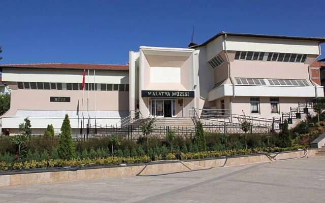
マラティヤ博物館マラティヤ · 博物館マラズギルト博物館ムシュ · 博物館 マムレ城メルスィン · 城・歴史的建造物
マムレ城メルスィン · 城・歴史的建造物 マナヴガットの滝アンタルヤ · 滝
マナヴガットの滝アンタルヤ · 滝 マニサ・アクヒサル博物館とアクヒサル・テペ墓地マニサ · 遺跡
マニサ・アクヒサル博物館とアクヒサル・テペ墓地マニサ · 遺跡 マニサ博物館マニサ · 博物館
マニサ博物館マニサ · 博物館 マルディン博物館マルディン · 博物館マルマリス博物館ムーラ · 博物館
マルディン博物館マルディン · 博物館マルマリス博物館ムーラ · 博物館 マスラク離宮群イスタンブール · 城・歴史的建造物
マスラク離宮群イスタンブール · 城・歴史的建造物 無垢の博物館イスタンブール · 博物館マズ地下都市ネヴシェヒル · 地下都市マシャト遺丘トカト · 遺跡メフメト・アーキフ・エルソイ文学博物館図書館アンカラ · 博物館
無垢の博物館イスタンブール · 博物館マズ地下都市ネヴシェヒル · 地下都市マシャト遺丘トカト · 遺跡メフメト・アーキフ・エルソイ文学博物館図書館アンカラ · 博物館 メフメト・アーキフ・エルソイ記念館イスタンブール · 博物館メフメト・ジャービル・アルペル考古学博物館バトマン · 博物館
メフメト・アーキフ・エルソイ記念館イスタンブール · 博物館メフメト・ジャービル・アルペル考古学博物館バトマン · 博物館 メケ湖コンヤ · 湖
メケ湖コンヤ · 湖 メレン川デュズジェ · ラフティング
メレン川デュズジェ · ラフティング メリチ橋エディルネ · 城・歴史的建造物
メリチ橋エディルネ · 城・歴史的建造物 メルスィン・アタテュルクの家博物館メルスィン · 博物館
メルスィン・アタテュルクの家博物館メルスィン · 博物館 メルスィン・クズ城メルスィン · 城・歴史的建造物メルスィン博物館メルスィン · 博物館メルスィン・タルスス博物館メルスィン · 博物館
メルスィン・クズ城メルスィン · 城・歴史的建造物メルスィン博物館メルスィン · 博物館メルスィン・タルスス博物館メルスィン · 博物館 聖母マリアの家イズミル · 宗教建築
聖母マリアの家イズミル · 宗教建築 聖母マリア修道院（ギレスン）ギレスン · 宗教建築
聖母マリア修道院（ギレスン）ギレスン · 宗教建築 メトロポリス遺跡イズミル · 遺跡
メトロポリス遺跡イズミル · 遺跡 メヴラーナ博物館コンヤ · 博物館
メヴラーナ博物館コンヤ · 博物館 メヴレヴィー修道場博物館（レフコシャ）レフコシャ（ニコシア） · 博物館メヴレヴィー修道場博物館アンタルヤ · 博物館
メヴレヴィー修道場博物館（レフコシャ）レフコシャ（ニコシア） · 博物館メヴレヴィー修道場博物館アンタルヤ · 博物館 メズギトカレ記念墓メルスィン · 遺跡
メズギトカレ記念墓メルスィン · 遺跡 メヘル門（ムヘルの扉）ヴァン · 遺跡
メヘル門（ムヘルの扉）ヴァン · 遺跡 ミダス市遺跡（ヤズルカヤ）エスキシェヒル · 遺跡
ミダス市遺跡（ヤズルカヤ）エスキシェヒル · 遺跡 ミフリマー・スルタン・モスク（エディルネカプ）イスタンブール · 宗教建築
ミフリマー・スルタン・モスク（エディルネカプ）イスタンブール · 宗教建築 ミラス・ベチン城と遺跡ムーラ · 遺跡
ミラス・ベチン城と遺跡ムーラ · 遺跡 ミラス・エウロモス遺跡ムーラ · 遺跡ミラス石造物博物館ムーラ · 博物館ミラス・ウズンユヴァ（ヘカトムノスの記念墓）ムーラ · 遺跡
ミラス・エウロモス遺跡ムーラ · 遺跡ミラス石造物博物館ムーラ · 博物館ミラス・ウズンユヴァ（ヘカトムノスの記念墓）ムーラ · 遺跡 ミラス・ウズンユヴァ記念墓と博物館複合施設ムーラ · 遺跡ミラス・イアソス魚市場博物館ムーラ · 博物館
ミラス・ウズンユヴァ記念墓と博物館複合施設ムーラ · 遺跡ミラス・イアソス魚市場博物館ムーラ · 博物館 ミレトス博物館アイドゥン · 博物館
ミレトス博物館アイドゥン · 博物館 ミレトス遺跡アイドゥン · 遺跡
ミレトス遺跡アイドゥン · 遺跡 ミマール・スィナン市博物館カイセリ · 博物館
ミマール・スィナン市博物館カイセリ · 博物館 ミニアトゥルクイスタンブール · 博物館
ミニアトゥルクイスタンブール · 博物館 ミスィス（モプスエスティア）古代都市アダナ · 遺跡
ミスィス（モプスエスティア）古代都市アダナ · 遺跡 ミスィス・モザイク博物館アダナ · 博物館
ミスィス・モザイク博物館アダナ · 博物館 MKE産業技術博物館アンカラ · 博物館
MKE産業技術博物館アンカラ · 博物館 モル・ガブリエル修道院マルディン · 宗教建築MTAシェフヴァル自然史博物館アンカラ · 博物館ムジュル地下都市クルシェヒル · 地下都市
モル・ガブリエル修道院マルディン · 宗教建築MTAシェフヴァル自然史博物館アンカラ · 博物館ムジュル地下都市クルシェヒル · 地下都市 ムダニヤ休戦協定の家博物館ブルサ · 博物館
ムダニヤ休戦協定の家博物館ブルサ · 博物館 ムラディエ複合施設ブルサ · 宗教建築
ムラディエ複合施設ブルサ · 宗教建築 ムラディエの滝ヴァン · 滝
ムラディエの滝ヴァン · 滝 ムスタファパシャ（スィナソス）村ネヴシェヒル · 城・歴史的建造物
ムスタファパシャ（スィナソス）村ネヴシェヒル · 城・歴史的建造物 ムーラ・ボドルム・マウソレウム記念博物館ムーラ · 博物館
ムーラ・ボドルム・マウソレウム記念博物館ムーラ · 博物館 ムーラ・クニドス遺跡ムーラ · 遺跡
ムーラ・クニドス遺跡ムーラ · 遺跡 ムーラ博物館ムーラ · 博物館ムシュ博物館ムシュ · 博物館
ムーラ博物館ムーラ · 博物館ムシュ博物館ムシュ · 博物館 ミュンドス古代都市ムーラ · 遺跡
ミュンドス古代都市ムーラ · 遺跡 ミュラ遺跡アンタルヤ · 遺跡
ミュラ遺跡アンタルヤ · 遺跡 ミュウス古代都市アイドゥン · 遺跡
ミュウス古代都市アイドゥン · 遺跡 ミュゼ・ガズハーネイスタンブール · 博物館ナコレイアとセイイトガーズィー複合施設エスキシェヒル · 宗教建築
ミュゼ・ガズハーネイスタンブール · 博物館ナコレイアとセイイトガーズィー複合施設エスキシェヒル · 宗教建築 ナマズギャーフ砲台博物館チャナッカレ · 博物館
ナマズギャーフ砲台博物館チャナッカレ · 博物館 ナムルン城メルスィン · 城・歴史的建造物ナームク・ケマルの家博物館テキルダー · 博物館
ナムルン城メルスィン · 城・歴史的建造物ナームク・ケマルの家博物館テキルダー · 博物館 ナームク・ケマル牢獄と博物館ガズィマウサ（ファマグスタ） · 博物館ネアンドレイア古代都市チャナッカレ · 遺跡
ナームク・ケマル牢獄と博物館ガズィマウサ（ファマグスタ） · 博物館ネアンドレイア古代都市チャナッカレ · 遺跡 ネジミ・イーエの家民俗学博物館エディルネ · 博物館
ネジミ・イーエの家民俗学博物館エディルネ · 博物館 ネムルト火口湖ビトリス · 湖ネヴシェヒル・ハジュベクタシュ考古学民俗学博物館ネヴシェヒル · 博物館ネヴシェヒル・ハジュベクタシュ・アタテュルクの家博物館ネヴシェヒル · 博物館
ネムルト火口湖ビトリス · 湖ネヴシェヒル・ハジュベクタシュ考古学民俗学博物館ネヴシェヒル · 博物館ネヴシェヒル・ハジュベクタシュ・アタテュルクの家博物館ネヴシェヒル · 博物館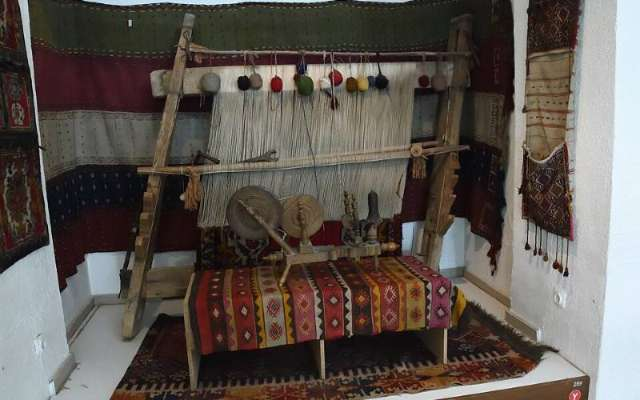
ネヴシェヒル博物館ネヴシェヒル · 博物館ニリュフェル・ハトゥン・イマーレト（トルコ・イスラム美術博物館）ブルサ · 博物館ニーデ・アンダヴァル遺跡ニーデ · 遺跡ニーデ博物館ニーデ · 博物館 ノティオン古代都市イズミル · 遺跡
ノティオン古代都市イズミル · 遺跡 ニュンファイオン（ニフ）ラスカリス宮殿イズミル · 城・歴史的建造物
ニュンファイオン（ニフ）ラスカリス宮殿イズミル · 城・歴史的建造物 ニサ遺跡（スルタンヒサル）アイドゥン · 遺跡
ニサ遺跡（スルタンヒサル）アイドゥン · 遺跡 中東工科大学科学技術博物館アンカラ · 博物館
中東工科大学科学技術博物館アンカラ · 博物館 オドゥンパザル近代美術館エスキシェヒル · 博物館オイノアンダ古代都市ムーラ · 遺跡
オドゥンパザル近代美術館エスキシェヒル · 博物館オイノアンダ古代都市ムーラ · 遺跡 オルバ古代都市メルスィン · 遺跡
オルバ古代都市メルスィン · 遺跡 オルズ遺丘アマスヤ · 遺跡
オルズ遺丘アマスヤ · 遺跡 オリンポス遺跡アンタルヤ · 遺跡十眼橋（ティグリス橋）ディヤルバクル · 城・歴史的建造物オルドゥ博物館オルドゥ · 博物館
オリンポス遺跡アンタルヤ · 遺跡十眼橋（ティグリス橋）ディヤルバクル · 城・歴史的建造物オルドゥ博物館オルドゥ · 博物館 オルハン・ケマル博物館イスタンブール · 博物館
オルハン・ケマル博物館イスタンブール · 博物館 オスマン・ハムディ・ベイ博物館コジャエリ · 博物館オスマニエ博物館オスマニエ · 博物館オスマンの家博物館ブルサ · 博物館
オスマン・ハムディ・ベイ博物館コジャエリ · 博物館オスマニエ博物館オスマニエ · 博物館オスマンの家博物館ブルサ · 博物館 オセロ城ガズィマウサ（ファマグスタ） · 城・歴史的建造物
オセロ城ガズィマウサ（ファマグスタ） · 城・歴史的建造物 オユルム遺丘キリス · 遺跡
オユルム遺丘キリス · 遺跡 パランドケン・スキー場エルズルム · スキー場
パランドケン・スキー場エルズルム · スキー場 パノラマ1453歴史博物館イスタンブール · 博物館
パノラマ1453歴史博物館イスタンブール · 博物館 パリオン古代都市チャナッカレ · 遺跡
パリオン古代都市チャナッカレ · 遺跡 パタラ遺跡アンタルヤ · 遺跡
パタラ遺跡アンタルヤ · 遺跡 ペダサ古代都市ムーラ · 遺跡ペドネリッソス古代都市アンタルヤ · 遺跡
ペダサ古代都市ムーラ · 遺跡ペドネリッソス古代都市アンタルヤ · 遺跡 ペラ美術館イスタンブール · 博物館
ペラ美術館イスタンブール · 博物館 ペルゲ遺跡アンタルヤ · 遺跡ペルペレネ古代都市バルケシル · 遺跡
ペルゲ遺跡アンタルヤ · 遺跡ペルペレネ古代都市バルケシル · 遺跡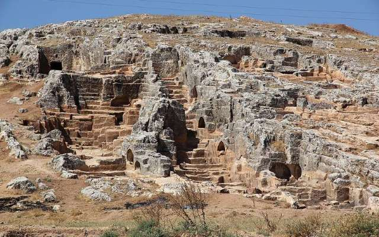
ペッレ遺跡アドゥヤマン · 遺跡 ペッシヌス遺跡エスキシェヒル · 遺跡
ペッシヌス遺跡エスキシェヒル · 遺跡 ファセリス遺跡アンタルヤ · 遺跡
ファセリス遺跡アンタルヤ · 遺跡 フェロス古代都市アンタルヤ · 遺跡
フェロス古代都市アンタルヤ · 遺跡 フォカイア（フォチャ）古代都市イズミル · 遺跡
フォカイア（フォチャ）古代都市イズミル · 遺跡 ピエール・ロティ博物館イスタンブール · 博物館
ピエール・ロティ博物館イスタンブール · 博物館 ピシディアのアンティオキア古代都市ウスパルタ · 遺跡ポンペイオポリス古代都市カスタモヌ · 遺跡
ピシディアのアンティオキア古代都市ウスパルタ · 遺跡ポンペイオポリス古代都市カスタモヌ · 遺跡 プリエネ遺跡アイドゥン · 遺跡
プリエネ遺跡アイドゥン · 遺跡 プルシアス・アド・ヒュピウム（コヌラルプ）古代都市デュズジェ · 遺跡
プルシアス・アド・ヒュピウム（コヌラルプ）古代都市デュズジェ · 遺跡 ピュドナイ城ムーラ · 遺跡
ピュドナイ城ムーラ · 遺跡 ラフミ・M・コチ博物館イスタンブール · 博物館
ラフミ・M・コチ博物館イスタンブール · 博物館 ラーミ兵舎（ラーミ図書館）イスタンブール · 城・歴史的建造物
ラーミ兵舎（ラーミ図書館）イスタンブール · 城・歴史的建造物 国立絵画彫刻博物館アンカラ · 博物館
国立絵画彫刻博物館アンカラ · 博物館 レザン・ハス博物館イスタンブール · 博物館
レザン・ハス博物館イスタンブール · 博物館 ロディアポリス古代都市アンタルヤ · 遺跡
ロディアポリス古代都市アンタルヤ · 遺跡 リゼ・アタテュルクの家博物館リゼ · 博物館リゼ博物館リゼ · 博物館
リゼ・アタテュルクの家博物館リゼ · 博物館リゼ博物館リゼ · 博物館 アンカラのローマ浴場アンカラ · 遺跡
アンカラのローマ浴場アンカラ · 遺跡 ルメリ・ヒサルイスタンブール · 城・歴史的建造物
ルメリ・ヒサルイスタンブール · 城・歴史的建造物 ルムカレ遺跡ガズィアンテプ · 遺跡
ルムカレ遺跡ガズィアンテプ · 遺跡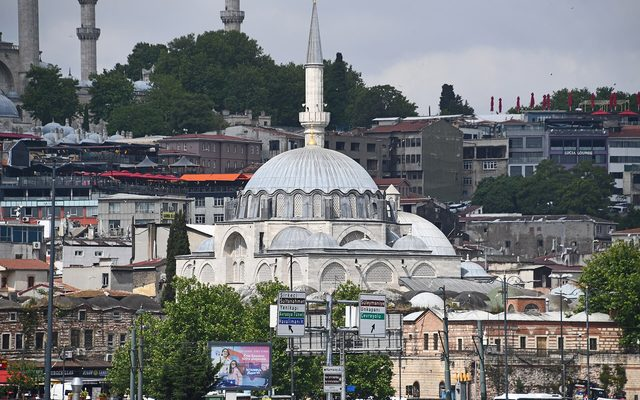
リュステム・パシャ・モスクイスタンブール · 宗教建築 サドベルク・ハヌム博物館イスタンブール · 博物館
サドベルク・ハヌム博物館イスタンブール · 博物館 サガラッソス遺跡ブルドゥル · 遺跡
サガラッソス遺跡ブルドゥル · 遺跡 サーヒビエ・メドレセカイセリ · 宗教建築
サーヒビエ・メドレセカイセリ · 宗教建築 サイト・ファイク・アバスヤヌク博物館イスタンブール · 博物館
サイト・ファイク・アバスヤヌク博物館イスタンブール · 博物館 サカリヤ博物館サカリヤ · 博物館
サカリヤ博物館サカリヤ · 博物館 サクルケント渓谷ムーラ · 渓谷
サクルケント渓谷ムーラ · 渓谷 サクプ・サバンジュ・マルディン市博物館マルディン · 博物館
サクプ・サバンジュ・マルディン市博物館マルディン · 博物館 サクプ・サバンジュ博物館イスタンブール · 博物館
サクプ・サバンジュ博物館イスタンブール · 博物館 サラミス遺跡ガズィマウサ（ファマグスタ） · 遺跡
サラミス遺跡ガズィマウサ（ファマグスタ） · 遺跡 サルダ湖ブルドゥル · 湖
サルダ湖ブルドゥル · 湖 サルト・ガラタイスタンブール · 博物館
サルト・ガラタイスタンブール · 博物館 サムスン博物館サムスン · 博物館
サムスン博物館サムスン · 博物館 サパンジャ湖サカリヤ · 湖
サパンジャ湖サカリヤ · 湖 サラトル・クルクギョズ地下都市アクサライ · 地下都市
サラトル・クルクギョズ地下都市アクサライ · 地下都市 サルディス遺跡マニサ · 遺跡
サルディス遺跡マニサ · 遺跡 サリッサ（クシャクル）ヒッタイト都市スィヴァス · 遺跡
サリッサ（クシャクル）ヒッタイト都市スィヴァス · 遺跡 サルハン隊商宿ネヴシェヒル · 城・歴史的建造物
サルハン隊商宿ネヴシェヒル · 城・歴史的建造物 サルカムシュ・スキー場カルス · スキー場
サルカムシュ・スキー場カルス · スキー場 サルカヤ・ローマ浴場ヨズガト · 遺跡
サルカヤ・ローマ浴場ヨズガト · 遺跡 サタラ古代都市ギュミュシュハーネ · 遺跡セバストポリス古代都市トカト · 遺跡
サタラ古代都市ギュミュシュハーネ · 遺跡セバストポリス古代都市トカト · 遺跡 セベダ古代都市アンタルヤ · 遺跡
セベダ古代都市アンタルヤ · 遺跡 セディル島遺跡ムーラ · 遺跡
セディル島遺跡ムーラ · 遺跡 セカ紙博物館コジャエリ · 博物館
セカ紙博物館コジャエリ · 博物館 セレウケイア（パンフィリア）古代都市アンタルヤ · 遺跡
セレウケイア（パンフィリア）古代都市アンタルヤ · 遺跡 セルゲ古代都市アンタルヤ · 遺跡
セルゲ古代都市アンタルヤ · 遺跡 セリミエ・モスクレフコシャ（ニコシア） · 宗教建築
セリミエ・モスクレフコシャ（ニコシア） · 宗教建築 セリヌス古代都市アンタルヤ · 遺跡
セリヌス古代都市アンタルヤ · 遺跡 シデ博物館アンタルヤ · 博物館
シデ博物館アンタルヤ · 博物館 シデ遺跡アンタルヤ · 遺跡
シデ遺跡アンタルヤ · 遺跡 シデュマ古代都市ムーラ · 遺跡スィイルトのウル・ジャーミィスィイルト · 宗教建築
シデュマ古代都市ムーラ · 遺跡スィイルトのウル・ジャーミィスィイルト · 宗教建築 スィリフケ・アストゥム洞窟メルスィン · 自然景勝地
スィリフケ・アストゥム洞窟メルスィン · 自然景勝地 スィリフケ・アタテュルクの家と民俗学博物館メルスィン · 博物館
スィリフケ・アタテュルクの家と民俗学博物館メルスィン · 博物館 スィリフケ・アヤテクラ遺跡メルスィン · 遺跡
スィリフケ・アヤテクラ遺跡メルスィン · 遺跡 スィリフケ・天国と地獄の陥没穴メルスィン · 自然景勝地
スィリフケ・天国と地獄の陥没穴メルスィン · 自然景勝地 スィリフケ城メルスィン · 城・歴史的建造物
スィリフケ城メルスィン · 城・歴史的建造物 スィリフケ博物館メルスィン · 博物館
スィリフケ博物館メルスィン · 博物館 スィリフケ・ナルルクユ・モザイク博物館メルスィン · 博物館
スィリフケ・ナルルクユ・モザイク博物館メルスィン · 博物館 スィッレと聖ヘレナ教会コンヤ · 宗教建築
スィッレと聖ヘレナ教会コンヤ · 宗教建築 シッリオン古代都市アンタルヤ · 遺跡シルヴァン・アタテュルクの家博物館ディヤルバクル · 博物館
シッリオン古代都市アンタルヤ · 遺跡シルヴァン・アタテュルクの家博物館ディヤルバクル · 博物館 シメナ遺跡アンタルヤ · 遺跡スィノプ・アルスラントルンラル民俗学博物館スィノプ · 博物館スィノプ博物館スィノプ · 博物館
シメナ遺跡アンタルヤ · 遺跡スィノプ・アルスラントルンラル民俗学博物館スィノプ · 博物館スィノプ博物館スィノプ · 博物館 スィルケリ遺丘とムワタリのレリーフアダナ · 遺跡
スィルケリ遺丘とムワタリのレリーフアダナ · 遺跡 スィヴァス考古学博物館スィヴァス · 博物館
スィヴァス考古学博物館スィヴァス · 博物館 スィヴァス・アタテュルクと会議博物館スィヴァス · 博物館
スィヴァス・アタテュルクと会議博物館スィヴァス · 博物館 ソベソス古代都市（シャヒンエフェンディ）ネヴシェヒル · 遺跡ソベソス遺跡ネヴシェヒル · 遺跡ソフラズ記念墓アドゥヤマン · 遺跡
ソベソス古代都市（シャヒンエフェンディ）ネヴシェヒル · 遺跡ソベソス遺跡ネヴシェヒル · 遺跡ソフラズ記念墓アドゥヤマン · 遺跡 ソフタ城メルスィン · 城・歴史的建造物
ソフタ城メルスィン · 城・歴史的建造物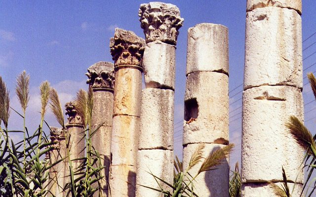
ソリ・ポンペイオポリス古代都市メルスィン · 遺跡 ソリ遺跡レフケ · 遺跡ソーマタル古代都市シャンルウルファ · 遺跡
ソリ遺跡レフケ · 遺跡ソーマタル古代都市シャンルウルファ · 遺跡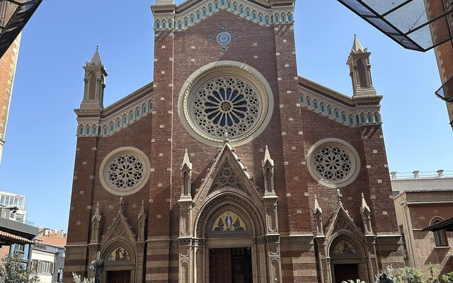
パドヴァの聖アントニオ教会イスタンブール · 宗教建築 聖バルナバ修道院ガズィマウサ（ファマグスタ） · 宗教建築
聖バルナバ修道院ガズィマウサ（ファマグスタ） · 宗教建築 聖ヒラリオン城ギルネ（キレニア） · 城・歴史的建造物
聖ヒラリオン城ギルネ（キレニア） · 城・歴史的建造物 聖ペテロ記念博物館ハタイ · 博物館
聖ペテロ記念博物館ハタイ · 博物館 聖シメオン修道院ハタイ · 宗教建築
聖シメオン修道院ハタイ · 宗教建築 ストラトニケイア遺跡ムーラ · 遺跡
ストラトニケイア遺跡ムーラ · 遺跡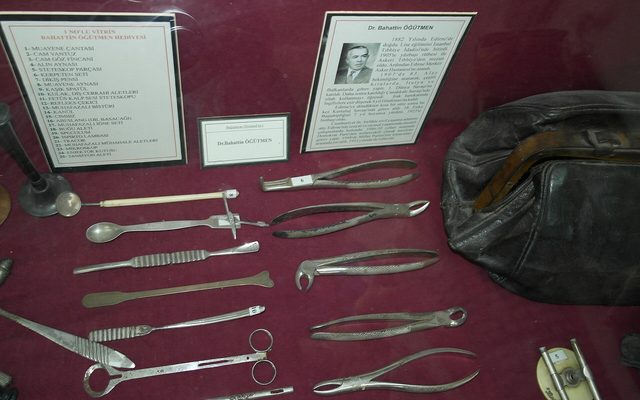
スルタン・バヤズィト2世複合施設健康博物館エディルネ · 博物館 スルタンアフメト・モスク（ブルーモスク）イスタンブール · 宗教建築
スルタンアフメト・モスク（ブルーモスク）イスタンブール · 宗教建築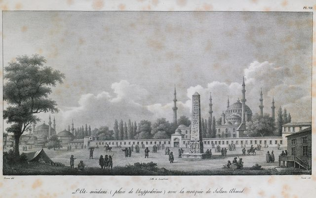
スルタンアフメト広場（ヒッポドローム）イスタンブール · 遺跡 スルタンハン隊商宿アクサライ · 城・歴史的建造物スルタンの道エディルネ · ハイキングコース
スルタンハン隊商宿アクサライ · 城・歴史的建造物スルタンの道エディルネ · ハイキングコース スラ古代都市アンタルヤ · 遺跡
スラ古代都市アンタルヤ · 遺跡 スルプ・ギラゴス・アルメニア教会ディヤルバクル · 宗教建築
スルプ・ギラゴス・アルメニア教会ディヤルバクル · 宗教建築 スウチトゥの滝ブルサ · 滝
スウチトゥの滝ブルサ · 滝 ソユット・エルトゥールル・ガーズィー博物館ビレジク · 博物館
ソユット・エルトゥールル・ガーズィー博物館ビレジク · 博物館 スレイマニエ・モスクイスタンブール · 宗教建築
スレイマニエ・モスクイスタンブール · 宗教建築 スメラ修道院トラブゾン · 宗教建築タフタクシュラル民俗学博物館バルケシル · 博物館タクシアルヒス記念博物館バルケシル · 博物館
スメラ修道院トラブゾン · 宗教建築タフタクシュラル民俗学博物館バルケシル · 博物館タクシアルヒス記念博物館バルケシル · 博物館 タプレリ古代都市メルスィン · 遺跡
タプレリ古代都市メルスィン · 遺跡 歴史的刑務所（スィノプ）スィノプ · 城・歴史的建造物
歴史的刑務所（スィノプ）スィノプ · 城・歴史的建造物 タルスス古代ローマ街道メルスィン · 遺跡
タルスス古代ローマ街道メルスィン · 遺跡 タルスス・ギョズリュクレメルスィン · 遺跡
タルスス・ギョズリュクレメルスィン · 遺跡 タルスス・クレオパトラ門と古代の道メルスィン · 遺跡
タルスス・クレオパトラ門と古代の道メルスィン · 遺跡 タルスス・聖パウロ記念博物館メルスィン · 博物館
タルスス・聖パウロ記念博物館メルスィン · 博物館 タルスス・聖パウロの井戸メルスィン · 宗教建築
タルスス・聖パウロの井戸メルスィン · 宗教建築 タトラリン地下都市ネヴシェヒル · 地下都市タイフン・タリポウル・タイプライター博物館エスキシェヒル · 博物館タズ渓谷アンタルヤ · 渓谷
タトラリン地下都市ネヴシェヒル · 地下都市タイフン・タリポウル・タイプライター博物館エスキシェヒル · 博物館タズ渓谷アンタルヤ · 渓谷 タシュキョプリュ（石橋）アダナ · 城・歴史的建造物
タシュキョプリュ（石橋）アダナ · 城・歴史的建造物 タシュジュ・アルスラン・エイジェ・アンフォラ博物館メルスィン · 博物館
タシュジュ・アルスラン・エイジェ・アンフォラ博物館メルスィン · 博物館 タシュジュ・アタテュルクの家メルスィン · 博物館
タシュジュ・アタテュルクの家メルスィン · 博物館 トルコ国鉄野外蒸気機関車博物館アンカラ · 博物館
トルコ国鉄野外蒸気機関車博物館アンカラ · 博物館 トルコ国鉄マルキョイ駅博物館アンカラ · 博物館
トルコ国鉄マルキョイ駅博物館アンカラ · 博物館 テイミウッサ古代都市アンタルヤ · 遺跡テキルダー・ムラトル・アタテュルクの家博物館テキルダー · 博物館テキルダー博物館テキルダー · 博物館
テイミウッサ古代都市アンタルヤ · 遺跡テキルダー・ムラトル・アタテュルクの家博物館テキルダー · 博物館テキルダー博物館テキルダー · 博物館 テッケキョイ洞窟サムスン · 遺跡
テッケキョイ洞窟サムスン · 遺跡 テオス遺跡イズミル · 遺跡
テオス遺跡イズミル · 遺跡 テルメッソス遺跡アンタルヤ · 遺跡
テルメッソス遺跡アンタルヤ · 遺跡 テオドシウスのフォルムの遺構イスタンブール · 遺跡
テオドシウスのフォルムの遺構イスタンブール · 遺跡 テオドシウスの城壁イスタンブール · 城・歴史的建造物ティルバシャル城ガズィアンテプ · 城・歴史的建造物
テオドシウスの城壁イスタンブール · 城・歴史的建造物ティルバシャル城ガズィアンテプ · 城・歴史的建造物 ティルメン・ホユックガズィアンテプ · 遺跡ティレ博物館イズミル · 博物館
ティルメン・ホユックガズィアンテプ · 遺跡ティレ博物館イズミル · 博物館 ティトゥス・トンネル（ウェスパシアヌス・トンネル）ハタイ · 遺跡
ティトゥス・トンネル（ウェスパシアヌス・トンネル）ハタイ · 遺跡 トファシュ・アナトリア馬車博物館ブルサ · 博物館トカト・アタテュルクの家と民俗学博物館トカト · 博物館
トファシュ・アナトリア馬車博物館ブルサ · 博物館トカト・アタテュルクの家と民俗学博物館トカト · 博物館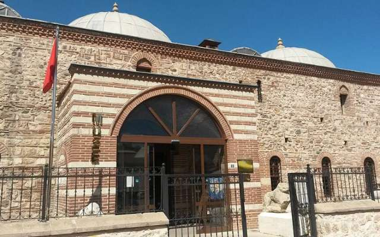
トカト博物館トカト · 博物館トカト・タシュハントカト · 城・歴史的建造物 トプカプ宮殿イスタンブール · 城・歴史的建造物
トプカプ宮殿イスタンブール · 城・歴史的建造物 トルトゥムの滝エルズルム · 滝
トルトゥムの滝エルズルム · 滝 トラブゾン・アタテュルク・キョシュキュトラブゾン · 博物館
トラブゾン・アタテュルク・キョシュキュトラブゾン · 博物館 トラブゾン・アヤソフィア・モスクトラブゾン · 宗教建築
トラブゾン・アヤソフィア・モスクトラブゾン · 宗教建築 トラブゾン博物館（コスタキ邸）トラブゾン · 博物館
トラブゾン博物館（コスタキ邸）トラブゾン · 博物館 トラレイス古代都市アイドゥン · 遺跡
トラレイス古代都市アイドゥン · 遺跡 トレベンナ古代都市アンタルヤ · 遺跡
トレベンナ古代都市アンタルヤ · 遺跡 トロイ博物館チャナッカレ · 博物館トリュサ古代都市アンタルヤ · 遺跡
トロイ博物館チャナッカレ · 博物館トリュサ古代都市アンタルヤ · 遺跡 トゥンジェリ博物館トゥンジェリ · 博物館
トゥンジェリ博物館トゥンジェリ · 博物館 トゥズ湖アクサライ · 湖
トゥズ湖アクサライ · 湖 ティアナ古代都市とローマのプール（ケメルヒサル）ニーデ · 遺跡
ティアナ古代都市とローマのプール（ケメルヒサル）ニーデ · 遺跡 ティベリッソス古代都市アンタルヤ · 遺跡
ティベリッソス古代都市アンタルヤ · 遺跡 トルコ航空協会博物館アンカラ · 博物館
トルコ航空協会博物館アンカラ · 博物館 トルコ・ワクフ書道芸術博物館イスタンブール · 博物館
トルコ・ワクフ書道芸術博物館イスタンブール · 博物館 トルコ・イスラム美術博物館（イスタンブール）イスタンブール · 博物館トルコ・イスラム美術博物館（エディルネ）エディルネ · 博物館
トルコ・イスラム美術博物館（イスタンブール）イスタンブール · 博物館トルコ・イスラム美術博物館（エディルネ）エディルネ · 博物館 トルコ・イスラム美術と民俗学博物館（エルズルム）エルズルム · 博物館
トルコ・イスラム美術と民俗学博物館（エルズルム）エルズルム · 博物館 トルコ・イシュ銀行博物館イスタンブール · 博物館
トルコ・イシュ銀行博物館イスタンブール · 博物館 ウルベイ渓谷自然公園ウシャク · 渓谷ウルボルル博物館ウスパルタ · 博物館
ウルベイ渓谷自然公園ウシャク · 渓谷ウルボルル博物館ウスパルタ · 博物館 ウルジャンラル刑務所博物館アンカラ · 博物館
ウルジャンラル刑務所博物館アンカラ · 博物館 ウルダー・スキー場ブルサ · スキー場
ウルダー・スキー場ブルサ · スキー場 ウズンジャブルチ遺跡メルスィン · 遺跡
ウズンジャブルチ遺跡メルスィン · 遺跡 ウズンギョルトラブゾン · 湖ウシャク博物館ウシャク · 博物館
ウズンギョルトラブゾン · 湖ウシャク博物館ウシャク · 博物館 ヴァッラ渓谷カスタモヌ · 渓谷
ヴァッラ渓谷カスタモヌ · 渓谷 ヴァン湖ヴァン · 湖
ヴァン湖ヴァン · 湖 ヴァン城ヴァン · 城・歴史的建造物
ヴァン城ヴァン · 城・歴史的建造物 ヴァン博物館ヴァン · 博物館
ヴァン博物館ヴァン · 博物館 ヴァルダ橋アダナ · 城・歴史的建造物ヴィゼ・アヤソフィア（ガーズィー・スレイマン・パシャ・モスク）クルクラーレリ · 宗教建築
ヴァルダ橋アダナ · 城・歴史的建造物ヴィゼ・アヤソフィア（ガーズィー・スレイマン・パシャ・モスク）クルクラーレリ · 宗教建築 ヴニ宮殿レフケ · 遺跡
ヴニ宮殿レフケ · 遺跡 ヤヒヤ・ケマル博物館イスタンブール · 博物館
ヤヒヤ・ケマル博物館イスタンブール · 博物館 ヤルヴァチ博物館ウスパルタ · 博物館
ヤルヴァチ博物館ウスパルタ · 博物館 ヤナルタシュ（キマイラ）アンタルヤ · 自然景勝地
ヤナルタシュ（キマイラ）アンタルヤ · 自然景勝地 ヤヌクハン遺跡メルスィン · 遺跡
ヤヌクハン遺跡メルスィン · 遺跡 イェディギョッレル国立公園ボル · 湖
イェディギョッレル国立公園ボル · 湖 イェディクレ要塞イスタンブール · 城・歴史的建造物
イェディクレ要塞イスタンブール · 城・歴史的建造物 イェニシェヒル・シェマキの家博物館ブルサ · 博物館
イェニシェヒル・シェマキの家博物館ブルサ · 博物館 地下宮殿（イェレバタン貯水池）イスタンブール · 城・歴史的建造物
地下宮殿（イェレバタン貯水池）イスタンブール · 城・歴史的建造物 イェセメク遺跡ガズィアンテプ · 遺跡
イェセメク遺跡ガズィアンテプ · 遺跡 イェシルヒサル・ソアンル遺跡カイセリ · 遺跡
イェシルヒサル・ソアンル遺跡カイセリ · 遺跡 イェシロヴァ遺丘イズミル · 遺跡
イェシロヴァ遺丘イズミル · 遺跡 イヴリ・ミナレ・モスクアンタルヤ · 宗教建築
イヴリ・ミナレ・モスクアンタルヤ · 宗教建築 ヨズガト博物館ヨズガト · 博物館
ヨズガト博物館ヨズガト · 博物館 ユムクテペ遺丘メルスィン · 遺跡
ユムクテペ遺丘メルスィン · 遺跡 ユリュク・アリ・エフェの家博物館アイドゥン · 博物館
ユリュク・アリ・エフェの家博物館アイドゥン · 博物館 ユリュク村カラビュク · 城・歴史的建造物ヤロヴァの「歩く館」ヤロヴァ · 博物館
ユリュク村カラビュク · 城・歴史的建造物ヤロヴァの「歩く館」ヤロヴァ · 博物館 ユランカレアダナ · 城・歴史的建造物
ユランカレアダナ · 城・歴史的建造物 ユルドゥズ陶磁器工場イスタンブール · 博物館
ユルドゥズ陶磁器工場イスタンブール · 博物館 ユルドゥズ宮殿イスタンブール · 城・歴史的建造物
ユルドゥズ宮殿イスタンブール · 城・歴史的建造物 ユルマズ・ビュユケルシェン蝋人形館エスキシェヒル · 博物館
ユルマズ・ビュユケルシェン蝋人形館エスキシェヒル · 博物館 勝利博物館アフヨンカラヒサール · 博物館
勝利博物館アフヨンカラヒサール · 博物館 ザマントゥ川アダナ · ラフティング
ザマントゥ川アダナ · ラフティング ザザディン・ハンコンヤ · 城・歴史的建造物
ザザディン・ハンコンヤ · 城・歴史的建造物 ゼキ・ミュレン芸術博物館ムーラ · 博物館
ゼキ・ミュレン芸術博物館ムーラ · 博物館 ゼンギバル城（イサウラ）コンヤ · 遺跡
ゼンギバル城（イサウラ）コンヤ · 遺跡 ゼルゼヴァン城ディヤルバクル · 遺跡
ゼルゼヴァン城ディヤルバクル · 遺跡 ゼウグマ・モザイク博物館ガズィアンテプ · 博物館
ゼウグマ・モザイク博物館ガズィアンテプ · 博物館 ゼウグマ遺跡ガズィアンテプ · 遺跡
ゼウグマ遺跡ガズィアンテプ · 遺跡 ズィルカレリゼ · 城・歴史的建造物
ズィルカレリゼ · 城・歴史的建造物 ズィンジリエ・メドレセディヤルバクル · 宗教建築
ズィンジリエ・メドレセディヤルバクル · 宗教建築 ズィンジルリ・ホユック（サマル）ガズィアンテプ · 遺跡
ズィンジルリ・ホユック（サマル）ガズィアンテプ · 遺跡 ズィヤ・ギョカルプ博物館ディヤルバクル · 博物館
ズィヤ・ギョカルプ博物館ディヤルバクル · 博物館 サントラルイスタンブール・エネルギー博物館イスタンブール · 博物館
サントラルイスタンブール・エネルギー博物館イスタンブール · 博物館 チャムルク蒸気機関車博物館イズミル · 博物館
チャムルク蒸気機関車博物館イズミル · 博物館 チャナッカレ海事博物館チャナッカレ · 博物館チャナッカレ叙事詩紹介センターチャナッカレ · 博物館チャナッカレ・ヒラリ・アフメル再現エリアチャナッカレ · 博物館
チャナッカレ海事博物館チャナッカレ · 博物館チャナッカレ叙事詩紹介センターチャナッカレ · 博物館チャナッカレ・ヒラリ・アフメル再現エリアチャナッカレ · 博物館 チャンクル博物館チャンクル · 博物館
チャンクル博物館チャンクル · 博物館 チャタルジャ住民交換博物館イスタンブール · 博物館
チャタルジャ住民交換博物館イスタンブール · 博物館 チャトゥオレン古代集落メルスィン · 遺跡
チャトゥオレン古代集落メルスィン · 遺跡 チャヴシュテペ城ヴァン · 城・歴史的建造物
チャヴシュテペ城ヴァン · 城・歴史的建造物 チャユヌ遺丘ディヤルバクル · 遺跡
チャユヌ遺丘ディヤルバクル · 遺跡 現代ガラス芸術博物館エスキシェヒル · 博物館
現代ガラス芸術博物館エスキシェヒル · 博物館 チェンベルリタシュの円柱（コンスタンティヌスのフォルム）イスタンブール · 城・歴史的建造物
チェンベルリタシュの円柱（コンスタンティヌスのフォルム）イスタンブール · 城・歴史的建造物 チェンゲルハン・ラフミ・M・コチ博物館アンカラ · 博物館チェヴリク遺跡ハタイ · 遺跡
チェンゲルハン・ラフミ・M・コチ博物館アンカラ · 博物館チェヴリク遺跡ハタイ · 遺跡 チェシメ博物館イズミル · 博物館
チェシメ博物館イズミル · 博物館 タイル博物館（キュタヒヤ）キュタヒヤ · 博物館
タイル博物館（キュタヒヤ）キュタヒヤ · 博物館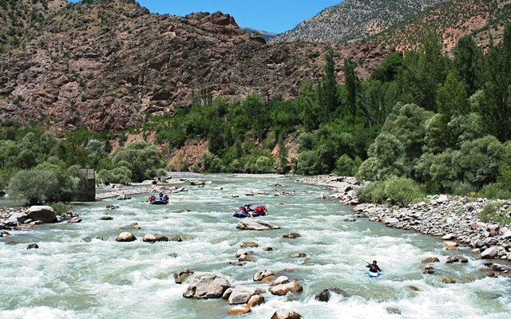
チョルフ川アルトヴィン · ラフティング チョルム博物館チョルム · 博物館
チョルム博物館チョルム · 博物館 チュルドゥル湖アルダハン · 湖ウデミシュ博物館イズミル · 博物館
チュルドゥル湖アルダハン · 湖ウデミシュ博物館イズミル · 博物館 オキュズイニ洞窟アンタルヤ · 遺跡
オキュズイニ洞窟アンタルヤ · 遺跡 オキュズリュ遺跡メルスィン · 遺跡
オキュズリュ遺跡メルスィン · 遺跡 オズコナク地下都市ネヴシェヒル · 地下都市ユルギュップ博物館ネヴシェヒル · 博物館
オズコナク地下都市ネヴシェヒル · 地下都市ユルギュップ博物館ネヴシェヒル · 博物館 ユチュ・キュンベトレル（三つの墓廟）エルズルム · 宗教建築
ユチュ・キュンベトレル（三つの墓廟）エルズルム · 宗教建築 ユチャヤクル・ヴィラ・ルスティカメルスィン · 遺跡イデュロス古代都市アンタルヤ · 遺跡
ユチャヤクル・ヴィラ・ルスティカメルスィン · 遺跡イデュロス古代都市アンタルヤ · 遺跡 イルハン・コマン彫刻絵画博物館エディルネ · 博物館
イルハン・コマン彫刻絵画博物館エディルネ · 博物館 イルテル・ウゼル医学歯学博物館アダナ · 博物館
イルテル・ウゼル医学歯学博物館アダナ · 博物館 イムラホル・イリヤス・ベイ・モスク（ストゥディオス修道院）イスタンブール · 宗教建築イノニュの戦い司令部博物館エスキシェヒル · 博物館
イムラホル・イリヤス・ベイ・モスク（ストゥディオス修道院）イスタンブール · 宗教建築イノニュの戦い司令部博物館エスキシェヒル · 博物館 イサク・パシャ宮殿アール · 城・歴史的建造物
イサク・パシャ宮殿アール · 城・歴史的建造物 イスケレ・イコン博物館イスケレ（トリコモ） · 博物館イスケンデルン海事博物館ハタイ · 博物館
イスケレ・イコン博物館イスケレ（トリコモ） · 博物館イスケンデルン海事博物館ハタイ · 博物館 イスラム科学技術史博物館イスタンブール · 博物館
イスラム科学技術史博物館イスタンブール · 博物館 イスメト・イノニュの家博物館イスタンブール · 博物館
イスメト・イノニュの家博物館イスタンブール · 博物館 イスタンブール考古学博物館イスタンブール · 博物館
イスタンブール考古学博物館イスタンブール · 博物館 イスタンブール海事博物館イスタンブール · 博物館
イスタンブール海事博物館イスタンブール · 博物館 イスタンブール・ガラタ塔イスタンブール · 城・歴史的建造物
イスタンブール・ガラタ塔イスタンブール · 城・歴史的建造物 イスタンブール航空博物館イスタンブール · 博物館イスタンブール空港博物館イスタンブール · 博物館
イスタンブール航空博物館イスタンブール · 博物館イスタンブール空港博物館イスタンブール · 博物館 イスタンブール・モダンイスタンブール · 博物館
イスタンブール・モダンイスタンブール · 博物館 イスタンブールおもちゃ博物館イスタンブール · 博物館
イスタンブールおもちゃ博物館イスタンブール · 博物館 イズミル考古学博物館イズミル · 博物館イズミル・アタテュルク博物館イズミル · 博物館
イズミル考古学博物館イズミル · 博物館イズミル・アタテュルク博物館イズミル · 博物館 イズミル文化芸術工場イズミル · 博物館イズミル国立絵画彫刻博物館イズミル · 博物館
イズミル文化芸術工場イズミル · 博物館イズミル国立絵画彫刻博物館イズミル · 博物館 イズミト地震追悼・啓発博物館コジャエリ · 博物館
イズミト地震追悼・啓発博物館コジャエリ · 博物館 イズニク博物館ブルサ · 博物館
イズニク博物館ブルサ · 博物館 イッゼト・コユノウル市博物館コンヤ · 博物館シャンルウルファ考古学博物館シャンルウルファ · 博物館
イッゼト・コユノウル市博物館コンヤ · 博物館シャンルウルファ考古学博物館シャンルウルファ · 博物館 シャンルウルファ城シャンルウルファ · 城・歴史的建造物
シャンルウルファ城シャンルウルファ · 城・歴史的建造物 シャピヌワチョルム · 遺跡
シャピヌワチョルム · 遺跡 シャル（コマナ）古代都市アダナ · 遺跡
シャル（コマナ）古代都市アダナ · 遺跡 シャラプサ・ハンアンタルヤ · 城・歴史的建造物
シャラプサ・ハンアンタルヤ · 城・歴史的建造物 シェビンカラヒサル・アタテュルクの家博物館ギレスン · 博物館
シェビンカラヒサル・アタテュルクの家博物館ギレスン · 博物館 シェフザーデ・モスクイスタンブール · 宗教建築
シェフザーデ・モスクイスタンブール · 宗教建築 シェレフィエ貯水池イスタンブール · 城・歴史的建造物
シェレフィエ貯水池イスタンブール · 城・歴史的建造物 シリンジェ村イズミル · 城・歴史的建造物シュアイブ市シャンルウルファ · 遺跡
シリンジェ村イズミル · 城・歴史的建造物シュアイブ市シャンルウルファ · 遺跡